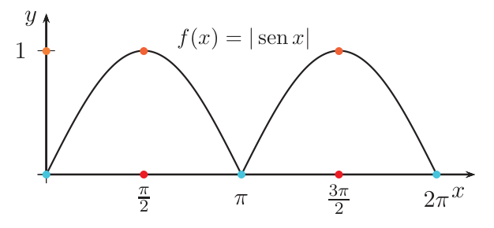
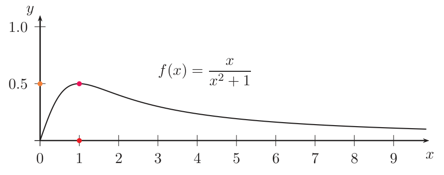
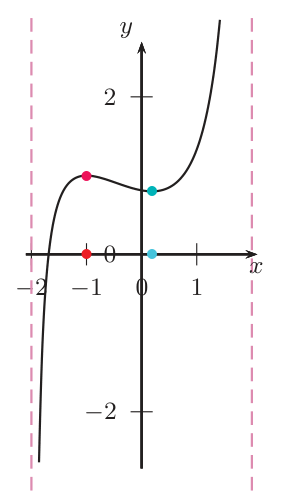
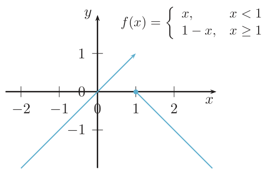
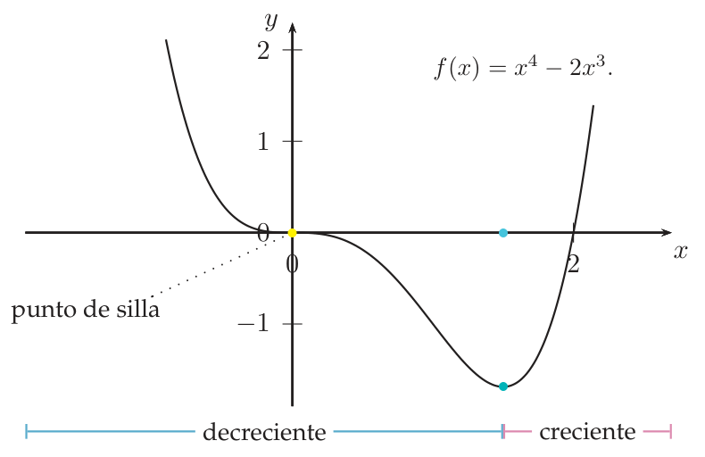
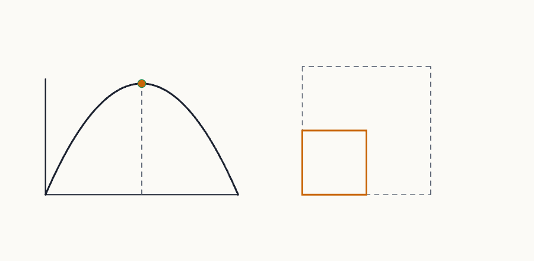
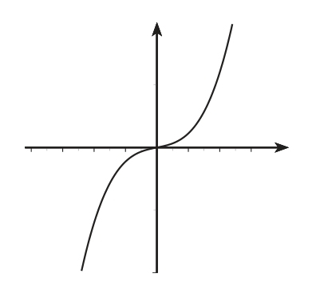

Módulo III · Aplicaciones de la derivada · Tema 3.4
Optimización. Extremos relativos y absolutos
Cómo encontrar el mayor y el menor valor de una función, cómo decidir si un punto crítico es máximo, mínimo o ninguno de los dos, y cómo aplicarlo a problemas de «hacer algo lo más grande (o barato) posible».
Libro oficial: Cálculo para Ingenieros, §3.4 (pp. 125-134)Ejercicios: E Ej. 3.29–3.38 y 3.44Examen: 8 problemas de X⏱ ~5 h de estudio
U oficial
S Stewart
L Larson
E ejercicios
P propio
X exámenes
— pasa el ratón (o toca) por cada etiqueta para ver libro y página; en pantallas anchas aparecen en el margen derecho.
La idea del tema en una frase
Todos buscamos «lo máximo con lo mínimo»: la caja de más volumen con una lámina dada, la lata que gasta menos chapa, el instante de máxima velocidad. Matemáticamente: dada una función, encontrar dónde alcanza su valor más grande o más pequeño. Los únicos sospechosos son los puntos críticos (donde la tangente es horizontal o donde hay un «pico» sin tangente) y, si el dominio tiene extremos, los bordes.
Es como buscar la cima y el valle de una ruta de senderismo: o están donde el camino se aplana, o en un pico afilado, o en el punto de partida o llegada.
Si solo tienes un rato, llévate esto. El resto de la página lo desarrolla con ejemplos y ejercicios.
Método en 4 pasos
Identifica qué te piden: extremos absolutos (el mayor y el menor valor) o relativos (picos y valles), y en qué dominio: intervalo cerrado, abierto o infinito. Si es un problema con enunciado, escribe la función y su dominio.
Lista de candidatos: los puntos críticos ($f'=0$ o $f$ no derivable) y, si el intervalo tiene extremos, los bordes.
Decide: en un intervalo cerrado, tabla de valores y gana el mayor y el menor; en uno abierto o infinito, signo de $f'$ y límites en los bordes (puede no haber máximo o mínimo); para clasificar un crítico, signo de $f'$ a cada lado o $f''$.
Responde con palabras: dónde se alcanza y cuánto vale, si es relativo o absoluto, y en optimización los valores de todas las variables. Comprueba que no te dejas bordes ni puntos sin derivada.
Qué hago según lo que piden
¿«Extremos absolutos en $[a,b]$»? $\to$ críticos + bordes, tabla de valores, comparar.
¿«¿Alcanza máximo y mínimo?» sin calcularlos? $\to$ Weierstrass: continua en un cerrado y acotado.
¿«Clasifica los puntos críticos» o «¿es máximo o mínimo?»? $\to$ signo de $f'$ o $f''$; si $f''(c)=0$, primera derivada no nula.
¿Problema con enunciado (lados, cajas, suma fija)? $\to$ la restricción deja una variable; luego intervalo cerrado.
Fórmulas y enunciados, con su «cuándo se usa»
Fórmula o enunciado
Cuándo se usa
$f$ continua en $[a,b]$ $\Rightarrow$ máximo y mínimo absolutos (Weierstrass)
«¿Alcanza máximo y mínimo?»; justifica que la tabla de valores sirve.
Punto crítico: $f'(c)=0$ o $f$ no derivable en $c$
Lista de candidatos; valores absolutos y picos de $|x|$ o $x^{2/3}$.
Extremos absolutos en $[a,b]$: críticos $\cup\{a,b\}$, comparar $f$
Intervalo cerrado y acotado.
1.ª derivada: $f'$ pasa de $-$ a $+$: mínimo; de $+$ a $-$: máximo
$f$ continua en $c$; vale también en picos sin derivada.
2.ª derivada: $f'(c)=0$ y $f''(c)>0$ mínimo, $f''(c)<0$ máximo
Polinomios y funciones cómodas; si $f''(c)=0$ no decide.
Primera derivada no nula de orden $n$: par, extremo; impar, silla
En los exámenes resueltos hay 8 problemas de este tema: tabla de valores en un intervalo cerrado, «¿tiene un extremo?» con valor absoluto o Weierstrass, puntos críticos y su clasificación, y el clásico «dos números con suma fija y producto máximo». En el libro de ejercicios son E 3.29-3.38 y 3.44. Tabla completa por tipo: pestaña Examen.
U pp.125-134P
Camino de estudio: elige tu nivel
Empieza por «Mínimo»; luego «Completo» y, para nota alta, «Reto». Marca cada ejercicio al terminarlo.
Los apartados de extremos absolutos (1), clasificación de críticos (2) y optimización (3) y el mapa de decisión (apartado 4).
Un ejercicio de cada tipo:
E 3.32 (intervalo cerrado), E 3.34 (valor absoluto, sin derivada), E 3.44 (clasificar y absoluto), E 3.37 (optimización), Examen 3 (Weierstrass), Examen 5 (suma fija, producto máximo), Examen 6 (tabla de valores) y Examen 7 (orden superior).
Todo el tema (desmarca «Solo lo esencial»), con el interactivo.
E 3.29-3.38 y 3.44, los 8 exámenes, los ejemplos propios y todas las prácticas.
🟣 Reto · ≈ +1 h
E 3.31 (extremos de la velocidad en $[0,\infty)$), E 3.33 (hallar coeficientes y extremos), E 3.36 (leer la gráfica de $f'$), los ejemplos propios P3 y P4 y las prácticas ★★.
Verás solo lo esencial; desmarca para ver todo.
0Antes de empezar U p.125
Qué necesitas saber ya U §2.2-2.3, pp.52, 98
Derivar y resolver $f'(x)=0$ (reglas de derivación, Tema 2).
Crecimiento y decrecimiento: $f'>0\Rightarrow f$ estrictamente creciente; $f'<0\Rightarrow$ estrictamente decreciente (Prop. 2.4, p. 98).
Límites en $\pm\infty$ y L'Hôpital (para intervalos no acotados), §2.3.
Una función continua en un intervalo cerrado y acotado alcanza máximo y mínimo (Weierstrass, Prop. 1.15, p. 52).
Mapa del tema: qué se pide en los ejercicios y en el examen
(A) Extremos en un intervalo cerrado: lista de candidatos, tabla de valores (E 3.31-3.33; Examen 1 y Examen 6). (B) Casos con valor absoluto o raíz, donde no hay derivada, y «¿alcanza máximo y mínimo?» (E 3.34-3.35; Examen 2 y Examen 3, con Weierstrass). (C) Clasificar puntos críticos con la 1.ª o la 2.ª derivada, con derivadas de orden superior o leyendo la gráfica de $f'$ (E 3.29, 3.30, 3.36, 3.44; Examen 4 y Examen 7). (D) Problemas de optimización: «dos números con suma fija y producto máximo», cajas, rectángulos (E 3.37-3.38; Examen 5 y Examen 8). Los ejercicios E 3.39-3.43, 3.45-3.48 (concavidad, inflexión, representación gráfica) son de 3.5 y se verán allí.
1Extremos absolutos y puntos críticos U pp.125-129
Lo que vas a aprender. a decidir si una función tiene mayor y menor valor, a listar los candidatos (puntos críticos y bordes) y a escribir la tabla de valores que lo resuelve.
Cómo lo reconoces: «Halla los extremos absolutos en $[a,b]$», «¿alcanza máximo y mínimo?», o un dominio abierto o infinito.
Qué haces: Compruebas que $f$ es continua en el cerrado (Weierstrass); buscas los críticos ($f'=0$ o sin derivada); evalúas $f$ en críticos y bordes y comparas. En abierto o infinito añades límites en los bordes y la monotonía.
Ejemplo mínimo: $f(x)=x^2$ en $[-1,2]$: crítico $x=0$; $f(-1)=1$, $f(0)=0$, $f(2)=4$. Máximo absoluto $4$ en el borde $x=2$; mínimo absoluto $0$ en $x=0$.
Idea intuitiva
Imagina la gráfica como un perfil de montaña recorrido por un excursionista. El máximo absoluto es la cumbre más alta de todo el recorrido; el mínimo absoluto, el punto más bajo. Una función continua sobre un tramo con principio y final (un intervalo cerrado) no puede evitar tener un punto más alto y uno más bajo: no hay huecos por los que «escaparse». Si el recorrido no tiene final (intervalo infinito) o no incluye sus extremos (abierto), la cima puede quedar «fuera» y no existir.
P
Definición 3.4 · extremos absolutos
$f:D\to\mathbb R$ tiene un mínimo absoluto en $c$ si $f(c)\le f(x)$ para todo $x\in D$; tiene un máximo absoluto en $c$ si $f(c)\ge f(x)$ para todo $x\in D$. Un extremo absoluto es un máximo o un mínimo absoluto.
U p.126
Error típico · punto frente a valor
El máximo se alcanza en un punto $x=c$ (eje horizontal) y vale $f(c)$ (eje vertical). Si te piden «los extremos», da ambos. Además, un mismo valor extremo puede alcanzarse en varios puntos.
U pp.127-128
Teorema de Weierstrass (valor extremo) · existencia
Si $f$ es continua en $[a,b]$, existen $c,d\in[a,b]$ con $f(c)\le f(x)\le f(d)$ para todo $x\in[a,b]$: $f$ alcanza un mínimo y un máximo absolutos. Garantiza que existen; no dice dónde están.
U p.52S p.275L p.162
Definición 3.5 · punto crítico
El punto $c\in(a,b)$ es un punto crítico de la función continua $f:[a,b]\to\mathbb R$ si $f'(c)=0$ o $f$ no es derivable en $c$.
U p.126L p.164
Proposición 3.4 · dónde buscar los extremos absolutos
Los extremos absolutos de una función continua $f:[a,b]\to\mathbb R$ se alcanzan en los extremos del intervalo ($a$ o $b$) o en los puntos críticos de $f$.
La continuidad es esencial: $f(x)=1/x$ si $x\ne0$, $f(0)=0$, en $[-1,1]$ no tiene extremos absolutos.
U p.126
Método del intervalo cerrado (receta)
Comprobar que $f$ es continua en $[a,b]$ (así hay máximo y mínimo: Weierstrass).
Hallar los puntos críticos de $(a,b)$: ceros de $f'$ y puntos donde $f$ no es derivable.
Evaluar $f$ en los puntos críticos y en $a$ y $b$.
El valor mayor es el máximo absoluto; el menor, el mínimo absoluto. Decir en qué puntos se alcanzan.
Es exactamente lo que se hace en los Ejemplos 3.19 y 3.20.
U pp.126-128L p.165S pp.278-280
Ejemplo 3.19 de U · polinomio en un intervalo cerrado
Extremos absolutos de $f(x)=4x^3-3x^2-6x+2$ en $[0,2]$.
Derivada: $f'(x)=12x^2-6x-6=6(2x^2-x-1)$. Es un polinomio: derivable siempre, los críticos son los ceros de $f'$.
Ceros: $2x^2-x-1=0\iff x=1$ o $x=-\tfrac12$. Solo $x=1$ está en $(0,2)$.
Tabla: $f(0)=2$, $f(1)=-3$, $f(2)=32-12-12+2=10$.
Conclusión: mínimo absoluto $-3$ en $x=1$; máximo absoluto $10$ en $x=2$ (un borde).
U pp.126-127
Ejemplo 3.20 de U · con un punto no derivable
Extremos absolutos de $f(x)=|\operatorname{sen}x|$ en $[0,2\pi]$.
A trozos: $f=\operatorname{sen}x$ en $[0,\pi]$ y $f=-\operatorname{sen}x$ en $(\pi,2\pi]$.
Críticos: $\pi/2$ y $3\pi/2$ ($f'=0$) y $\pi$ (pico: no derivable).
Conclusión: máximo absoluto $1$ en $\pi/2$ y $3\pi/2$; mínimo absoluto $0$ en $0$, $\pi$ y $2\pi$.
U pp.127-128

Figura 3.1: $|\operatorname{sen}x|$ y sus extremos absolutos en $[0,2\pi]$. U p.128
Intervalos abiertos o infinitos U p.128
Si el intervalo es abierto (o infinito) no se puede evaluar en los extremos, pero se sustituyen por los límites de $f$ al acercarse a ellos. Y como el intervalo no es cerrado y acotado, no hay garantía a priori de que existan máximo o mínimo.
Ejemplo 3.21 de U · $x/(x^2+1)$ en $(0,\infty)$
Derivada: $f'(x)=\dfrac{1-x^2}{(x^2+1)^2}$. El denominador no se anula, luego $f$ es derivable; $f'=0\iff x=\pm1$, y solo $x=1$ está en el intervalo $(0,\infty)$ ($x=-1$ no pertenece a él).
Límites en los bordes: $\lim_{x\to0^+}f(x)=0$ y $\lim_{x\to\infty}f(x)=0$ (por L'Hôpital: $\lim_{x\to\infty}\frac{x}{x^2+1}=\lim_{x\to\infty}\frac1{2x}=0$).
Comparar: $f(1)=\tfrac12>0$. Como la función sube desde $0$ hasta $\tfrac12$ y vuelve a acercarse a $0$, el máximo absoluto es $\tfrac12$, en $x=1$.
Mínimo: $f>0$ en todo el intervalo y se acerca a $0$ sin tocarlo ($0$ no pertenece al intervalo $(0,\infty)$): no hay mínimo absoluto.
La banda: toda la gráfica queda entre dos «tiras» horizontales, $0<f\le\tfrac12$: toca la de arriba (hay máximo) pero nunca la de abajo (no hay mínimo).
U pp.128-129U p.129

0: sube hasta el máximo 1/2 en x=1 y luego decrece acercándose a 0" loading="lazy">
Figura 3.2: $x/(x^2+1)$ y su máximo absoluto en $(0,\infty)$. U p.129
2Extremos relativos y su clasificación U pp.130-133
Lo que vas a aprender. a distinguir extremo relativo de absoluto y a clasificar un punto crítico con la 1.ª derivada, la 2.ª o las derivadas de orden superior.
Cómo lo reconoces: «Clasifica los puntos críticos», «¿máximo, mínimo o ninguno?», la gráfica de $f'$, o un crítico con $f''(c)=0$.
Qué haces: Hallas los críticos; en cada uno miras si $f'$ cambia de signo (vale con $f$ continua) o el signo de $f''(c)$. Si $f''(c)=0$, sigues derivando: la primera derivada no nula de orden par da extremo (su signo dice cuál) y de orden impar, silla.
Ejemplo mínimo: $f(x)=x^3$ en $0$: $f'=3x^2\ge0$ no cambia de signo; $f''(0)=0$ y $f'''(0)=6$, de orden $3$ (impar): punto de silla, no hay extremo.
Idea intuitiva
Un máximo relativo es una cima «de su vecindad»: la más alta si solo miras alrededor, aunque la montaña de al lado sea más alta. Todo extremo absoluto es también relativo, pero no al revés. U lo motiva con la bolsa: comprar antes de que suba y vender antes de que baje es aprovechar los extremos relativos.
P
Definición 3.6 · extremos relativos
$f:D\to\mathbb R$ alcanza un mínimo relativo en $c$ si existe un intervalo $I\subset D$ (que contiene a $c$: aclaración propia, el texto impreso no lo dice) tal que $f(c)\le f(x)$ para todo $x\in I$. Alcanza un máximo relativo en $c$ si $f(c)\ge f(x)$ para todo $x\in I$. Un extremo relativo es un máximo o un mínimo relativo.
U p.130
Ejemplo 3.22 de U · relativos sí, absolutos no
La función $f(x)=1+\dfrac{(x+1)^2\,(x-\frac34)}{4-x^2}$ no tiene extremos absolutos en $(-2,2)$, pero sí relativos. $x=2$ y $x=-2$ son asíntotas verticales: al acercarse a $-2$ la función baja sin límite y al acercarse a $2$ sube sin límite, así que no hay valor más bajo ni más alto. Sin embargo, en la figura se ven una cima local cerca de $x=-1$ y un valle local cerca de $x\approx0{,}2$.
U p.130

Figura al margen del Ejemplo 3.22: extremos relativos sin extremos absolutos. U p.130
Aviso · los bordes del intervalo también cuentan (convenio de U)
Con la Def. 3.6 de U, un extremo del intervalo puede ser extremo relativo (basta tomar $I=[a,a+\delta]$). Por eso la Prop. 3.6 dice «en los extremos del intervalo o en los puntos críticos» y E (3.31, 3.32, 3.33) llama extremos relativos a $t=0$, $x=\pm1$, $t=6$. En el examen, aclara «extremo relativo en el borde del intervalo».
U pp.130-131
Proposición 3.5 · criterio de la 1.ª derivada (en forma de monotonía)
Sea $f$ continua y $c\in D$. Si existe $\varepsilon>0$ tal que $f$ es decreciente en $(c-\varepsilon,c)$ y creciente en $(c,c+\varepsilon)$, hay un mínimo relativo en $c$. Si es creciente a la izquierda y decreciente a la derecha, hay un máximo relativo.
En la práctica, con $f$ continua en $c$ y $f'\neq0$ a ambos lados de $c$ (cerca de $c$): el signo de $f'$ cambia en $c$. De $-$ a $+$: mínimo. De $+$ a $-$: máximo. Si $f'$ tiene el mismo signo a ambos lados, no hay extremo. La continuidad en $c$ es esencial: sin ella el criterio falla (Ej. 3.23).
U p.130L p.179
Ejemplo 3.23 de U · crecer y luego decrecer no basta si hay un salto
$f(x)=x$ si $x<1$; $f(x)=1-x$ si $x\ge1$. Su derivada pasa de $+$ ($f'=1$ antes de $1$) a $-$ ($f'=-1$ después), y sin embargo no hay máximo relativo en $1$: $f(1)=0$ es menor que los valores justo a la izquierda (que se acercan a $1$) y mayor que los de justo a la derecha (negativos), así que $f(1)$ no es ni mayor ni menor o igual que los valores de $f$ en ningún intervalo que contenga a $1$. La causa: $f$ no es continua en $1$ (salta de $1$ a $0$).
U pp.130-131

=1: una recta creciente que termina en (1,1) sin llegar, y otra decreciente que empieza en (1,0)" loading="lazy">
Figura 3.3: creciente en $(-\infty,1)$ y decreciente en $(1,\infty)$, sin extremo relativo en $1$. U p.131
Proposición 3.6 · los candidatos (la idea de Fermat)
Los extremos relativos de una función continua $f:[a,b]\to\mathbb R$ se alcanzan en los extremos del intervalo o en los puntos críticos. Los extremos relativos de una función continua $f:(a,b)\to\mathbb R$ se alcanzan, de existir, en los puntos críticos.
Esta Proposición 3.6 es el «teorema de Fermat»: si $f$ es derivable y tiene un extremo relativo interior en $c$, entonces $f'(c)=0$. El recíproco es falso (ver punto de silla).
Es muy común llamar «extremos» a los puntos en los que se alcanza un extremo relativo. Una función puede tener infinitos extremos relativos con valores distintos (p. ej. $x\cos x$, aviso de U p.132).
U p.131S p.276L p.164
Definición 3.7 · punto de silla
El punto $c$ es un punto de silla para $f$ si es un punto crítico de $f$ pero $f$ no alcanza un extremo relativo en $c$. Ejemplo: $f(x)=x^3$ en $x=0$.
U p.131
Proposición 3.7 · criterio de la 2.ª derivada
Sea $f:(a,b)\to\mathbb R$ dos veces derivable y $c\in(a,b)$ con $f'(c)=0$. Si $f''(c)>0$, mínimo relativo en $c$ (la gráfica se curva hacia arriba, como una «sonrisa»). Si $f''(c)<0$, máximo relativo en $c$ (curva hacia abajo). Si $f''(c)=0$, no decide.
U p.131L p.191S p.295
Proposición 3.8 · derivadas de orden superior
Si la primera derivada que no se anula en un punto crítico $c$ es de orden par, hay extremo: máximo si es negativa, mínimo si es positiva. Si es de orden impar, hay un punto de silla.
Truco para recordarlo: $x^2,x^4,\dots$ (orden par) tienen mínimo en $0$ y $-x^2,-x^4,\dots$ máximo; $x^3,x^5,\dots$ (orden impar) no tienen extremo.
U p.132
Ejemplo 3.24 de U · $f(x)=x^4-2x^3$
Críticos: $f'(x)=4x^3-6x^2=x^2(4x-6)=0\iff x=0$ o $x=\tfrac32$.
En $x=\tfrac32$: $f''(x)=12x^2-12x$, $f''(\tfrac32)=27-18=9>0$: mínimo relativo (Prop. 3.7), con $f(\tfrac32)=-\tfrac{27}{16}$.
En $x=0$: $f''(0)=0$, la Prop. 3.7 no decide. $f'''(x)=24x-12$, $f'''(0)=-12\neq0$: la primera derivada no nula es la 3.ª (orden impar) y hay un punto de silla (Prop. 3.8).
Comprobación con signos: $f'=x^2(4x-6)$ es negativa a ambos lados de $0$ (el factor $x^2\ge0$ no cambia de signo): $f$ decrece antes y después de $0$.
U p.132

Figura 3.4: $x^4-2x^3$, con su intervalo de decrecimiento y crecimiento, su mínimo relativo y su punto de silla. U p.133
Cómo elegir el criterio
1.ª derivada (signos): funciona si $f$ es continua en $c$ (también con puntos no derivables y si $f''(c)=0$) y es la que hay que usar con una gráfica de $f'$. 2.ª derivada: más rápida si $f''$ es fácil de calcular y $f''(c)\neq0$. Definición: cuando hay cuadrados, valores absolutos o raíces, una desigualdad como $f(x)\ge f(c)$ lo resuelve sin derivar (E 3.34, 3.35, 3.44).
P
3Problemas de optimización U pp.132-134
Lo que vas a aprender. a convertir un problema de texto en una función de una variable y a justificar que el extremo hallado es el absoluto.
Cómo lo reconoces: «Con tanta valla, ¿qué dimensiones dan mayor área?», «dos números de suma fija y producto máximo», cajas, latas, distancias mínimas.
Qué haces: Nombras las variables, escribes la cantidad a optimizar, usas la restricción para dejar una sola variable, fijas el dominio, buscas críticos y comparas con los bordes (o límites); respondes con todas las variables.
Ejemplo mínimo: Dos números positivos de suma $10$ con producto máximo: $P(x)=x(10-x)$ en $[0,10]$; $P'=10-2x=0\Rightarrow x=5$; $P(0)=P(10)=0<P(5)=25$. Los números son $5$ y $5$.
Idea intuitiva
Un problema de optimización es un problema de texto disfrazado: hay una cantidad que quieres hacer máxima o mínima (área, volumen, coste) y una condición que limita (perímetro fijo, material fijo). Se usa la condición para dejar la cantidad en función de una sola variable, y entonces ya es el método del intervalo cerrado de siempre.
P
Receta de optimización con restricción
Dibujar y nombrar las variables (con unidades).
Escribir la cantidad a optimizar en función de todas las variables.
Usar la restricción para eliminar variables hasta dejar una.
Escribir el dominio (lados $\ge0$, etc.). Si es cerrado, método del intervalo cerrado; si es abierto, límites en los bordes.
Puntos críticos: derivar e igualar a $0$.
Justificar que es absoluto: comparar con los bordes, o estudiar el signo de $f'$ a ambos lados y los límites. Sola, $f''<0$ solo da máximo relativo.
Responder con palabras: valores de todas las variables originales y, si se pide, el valor óptimo.
PS pp.325-337L pp.215-223
Ejemplo 3.25 de U · recinto rectangular con 100 m de tela
Variables. Un lado $x$; el otro es $\frac{100-2x}{2}=50-x$.
Función. $A(x)=x(50-x)$ en $x\in[0,50]$ (el lado no puede ser negativo ni mayor que 50).
Respuesta: los cuatro lados iguales, 25 m (un cuadrado).
U pp.132-133
Ejemplo 3.26 de U · cuadrado más círculo: el máximo está en un borde
Con 100 m de tela se construyen a lo sumo dos recintos, uno cuadrado de lado $x$ y uno circular; ¿cómo hacer máxima el área total?
Tela: el cuadrado usa $4x$ m; al círculo le quedan $100-4x$ m, que es su circunferencia $2\pi r$: $r=\frac{50-2x}{\pi}$ y su área es $\pi r^2=\frac{(50-2x)^2}{\pi}$.
Crítico: $A'(x)=2x-\dfrac{4(50-2x)}{\pi}=0\iff x=\dfrac{100}{4+\pi}\approx14{,}0$. Como $A''=2+\frac8\pi>0$, es un mínimo relativo (área $\approx350$): no es lo que buscamos.
Bordes: $A(0)=\dfrac{2500}{\pi}\approx795{,}77$ y $A(25)=625$.
Respuesta: el máximo absoluto está en $x=0$: toda la tela para el círculo.
Lección: el punto crítico no siempre es lo que buscas; siempre mira los bordes.
U pp.133-134

Interactivo propio. A la izquierda, la gráfica de la cantidad $A(x)$ con el punto que mueves con $x$; a la derecha, la figura del problema (naranja) cambiando de forma. El punto verde es el óptimo absoluto y los azules son los puntos con $A'=0$. Ejemplo 3.25: el máximo está en el punto crítico ($x=25$). Ejemplo 3.26: el único crítico es un mínimo y el máximo está en el borde $x=0$. Lata (Propio 4): mínimo de material en $r=\sqrt[3]{500/\pi}\approx5{,}42$ cm. P
4Mapa de decisión: qué hago según lo que me piden P
Lo que vas a aprender. qué hacer según lo que te pidan (¿alcanza extremos?, problema con enunciado, intervalo cerrado, abierto o infinito, clasificar un crítico) con un mapa de decisión y, desplegable, una tabla con el detalle de cada caso.
Léelo de arriba abajo: en cada pregunta, «no» baja a la siguiente y «sí» te lleva a la acción de la derecha. Para hallar extremos absolutos en un intervalo cerrado el camino es siempre el mismo: críticos, bordes, tabla, comparar. Al final comprueba que no te dejas los bordes ni los puntos sin derivada: es lo que más puntos se pierde.
Ver la tabla con el detalle de cada caso
Piden…
Herramienta
Ojo con…
¿Alcanza máximo y mínimo?
Weierstrass: continua en $[a,b]$ cerrado y acotado
Sin intervalo cerrado y acotado no hay garantía ($x$ en $(0,1)$ no tiene máximo)
Extremos absolutos en $[a,b]$
Críticos de $(a,b)$ + bordes; tabla de valores; comparar
Los bordes cuentan; los puntos sin derivada también
Extremos absolutos en $(a,b)$, $(0,\infty)$ o $\mathbb R$
Críticos, signo de $f'$ y límites en los bordes
Si $f\to\pm\infty$ en un borde, ese extremo no existe; $f''<0$ solo da máximo relativo
Extremo con valor absoluto o raíz ($|x-1|$, $x^{2/3}$)
Derivadas laterales; definición ($f\ge f(c)$) o monotonía
«$f'$ nunca vale $0$» no basta: falta el punto sin derivada
Clasificar un crítico $c$ con $f$ continua
Signo de $f'$ a cada lado; o $f''(c)\ne0$
$f'(c)=0$ no garantiza extremo
$f''(c)=0$
Primera derivada no nula: par, extremo; impar, silla
$f''(c)=0$ no implica silla ($x^4$ tiene mínimo)
Leer la gráfica de $f'$
Extremos de $f$ donde $f'$ corta el eje cambiando de signo
Si $f'$ solo toca el eje, silla; la gráfica no es la de $f$
Problema con enunciado
Restricción $\to$ una variable $\to$ dominio $\to$ críticos $\to$ comparar
Escribir el dominio; un cero de $f'$ en un borde es un borde, no un crítico
Hallar parámetros para que haya un extremo
$f'(c)=0$ (y $f(c)$ dado) $\to$ sistema; después comprobar con $f''$
$f'(c)=0$ es necesaria, no suficiente
Método en cinco pasos para el examen
Traduce lo que piden a una fila del mapa (absoluto o relativo, y dominio).
Escribe el dominio y comprueba la continuidad ($f$ continua en $[a,b]$: hay máximo y mínimo).
Halla los candidatos: $f'=0$, puntos sin derivada y bordes.
Evalúa y compara (tabla de valores), o estudia el signo de $f'$ y los límites; para clasificar, usa $f'$, $f''$ o la primera derivada no nula.
Responde con palabras y comprueba: bordes, puntos sin derivada, relativo frente a absoluto, valores de todas las variables.
P
5Practica P
Lo que vas a aprender. a resolver tú solo un ejemplo de cada tipo. Intenta cada uno antes de abrir la pista; empieza por los ★ (los ★★ son ampliación).
Ahora hazlo tú
Primero mira el dominio: si es un intervalo cerrado, lista de candidatos (críticos y bordes) y tabla de valores; si es abierto o infinito, añade los límites en los bordes. Para clasificar un crítico: signo de $f'$ a cada lado (siempre vale con $f$ continua) o $f''$ (más rápido si no se anula). En los problemas con enunciado, la restricción deja una sola variable.
Extremos absolutos en un intervalo cerrado
★ Básico Práctica a1 · cúbica en $[-2,3]$ P
Halla los extremos absolutos de $f(x)=2x^3-3x^2-12x$ en $[-2,3]$.
Pista
Es un polinomio: continuo en $[-2,3]$ y derivable en todas partes. Los candidatos son los ceros de $f'$ dentro del intervalo y los dos bordes.
Ver solución
Existencia: $f$ es continua en el intervalo cerrado y acotado $[-2,3]$; por Weierstrass (Prop. 1.15, U p.52) tiene máximo y mínimo absolutos.
Críticos (Def. 3.5, U p.126): $f'(x)=6x^2-6x-12=6(x-2)(x+1)=0\iff x=-1$ o $x=2$; los dos están en $(-2,3)$.
Tabla de valores (Prop. 3.4, U p.126): $f(-2)=-16-12+24=-4$; $f(-1)=-2-3+12=7$; $f(2)=16-12-24=-20$; $f(3)=54-27-36=-9$.
Comparar: el mayor es $7$ y el menor $-20$; los bordes ($-4$ y $-9$) no ganan.
Resultado: máximo absoluto $7$ en $x=-1$; mínimo absoluto $-20$ en $x=2$
★★ Medio Práctica a2 · $x-2\operatorname{sen}x$ en $[0,\pi]$ P
Halla los extremos absolutos de $f(x)=x-2\operatorname{sen}x$ en $[0,\pi]$.
Pista
$f'(x)=1-2\cos x$. ¿Para qué ángulo de $(0,\pi)$ vale $\cos x=\frac12$? Para comparar los valores, usa $\pi\approx3{,}14$ y $\sqrt3\approx1{,}73$.
Ver solución
Existencia: suma de funciones continuas en el cerrado $[0,\pi]$: hay máximo y mínimo absolutos (Prop. 1.15, U p.52).
Críticos (Def. 3.5, U p.126): $f'(x)=1-2\cos x=0\iff\cos x=\frac12$. En $(0,\pi)$ el coseno es estrictamente decreciente, así que solo hay una solución: $x=\frac\pi3$.
Tabla (Prop. 3.4, U p.126): $f(0)=0$; $f(\frac\pi3)=\frac\pi3-2\cdot\frac{\sqrt3}2=\frac\pi3-\sqrt3\approx1{,}047-1{,}732=-0{,}685$; $f(\pi)=\pi-0=\pi\approx3{,}142$.
Comparar: el menor es $\frac\pi3-\sqrt3$ (en el punto crítico) y el mayor es $\pi$ (en el borde derecho).
Control con la monotonía: $f'<0$ en $(0,\frac\pi3)$ ($\cos x>\frac12$) y $f'>0$ en $(\frac\pi3,\pi)$: baja y luego sube, coherente con la tabla.
Resultado: mínimo absoluto $\frac\pi3-\sqrt3\approx-0{,}685$ en $x=\frac\pi3$; máximo absoluto $\pi$ en $x=\pi$
Intervalo cerrado con puntos sin derivada (valor absoluto, raíces)
★ Básico Práctica b1 · $|x^2-4|$ en $[-3,1]$ P
Halla los extremos absolutos de $f(x)=|x^2-4|$ en $[-3,1]$.
Pista
Escribe $f$ a trozos: el valor absoluto cambia de fórmula donde $x^2-4=0$. En ese punto la gráfica tiene un pico (no hay derivada): también es candidato.
Ver solución
A trozos: $x^2-4\ge0\iff|x|\ge2$. En $[-3,-2]$, $f(x)=x^2-4$; en $(-2,1]$, $f(x)=4-x^2$. Es continua (valor absoluto de un polinomio): hay máximo y mínimo (Prop. 1.15, U p.52).
Críticos donde hay derivada: en $(-3,-2)$, $f'=2x\ne0$; en $(-2,1)$, $f'=-2x=0\iff x=0$.
Crítico sin derivada (Def. 3.5, U p.126): en $x=-2$ las derivadas laterales son $2(-2)=-4$ (izquierda) y $-2(-2)=4$ (derecha), distintas: no es derivable.
Tabla (Prop. 3.4, U p.126): $f(-3)=5$; $f(-2)=0$; $f(0)=4$; $f(1)=3$.
Comparar: mayor $5$ (borde $x=-3$); menor $0$ (en el pico $x=-2$, donde además $f\ge0$ obliga a que sea mínimo).
Resultado: máximo absoluto $5$ en $x=-3$; mínimo absoluto $0$ en $x=-2$
★★ Medio Práctica b2 · $x^{2/3}(x-5)$: el máximo está en un pico P
Halla los extremos absolutos de $f(x)=x^{2/3}(x-5)$ en $[-1,4]$. (Aquí $x^{2/3}=(\sqrt[3]x)^2$, definida también para $x<0$.)
Pista
Escribe $f(x)=x^{5/3}-5x^{2/3}$ y deriva: $f'(x)=\frac53x^{2/3}-\frac{10}3x^{-1/3}$. Saca factor común $\frac53x^{-1/3}$. ¿Qué pasa en $x=0$?
Ver solución
Existencia: producto de continuas en $[-1,4]$: hay máximo y mínimo (Prop. 1.15, U p.52).
Críticos (Def. 3.5, U p.126): $f'=0\iff x=2$; y en $x=0$ el denominador se anula: $f$ no es derivable (tangente vertical), luego $x=0$ también es crítico.
Tabla (Prop. 3.4, U p.126): $f(-1)=1\cdot(-6)=-6$; $f(0)=0$; $f(2)=2^{2/3}(-3)=-3\sqrt[3]4\approx-4{,}76$; $f(4)=4^{2/3}(-1)=-2\sqrt[3]2\approx-2{,}52$.
Comparar: el mayor es $0$ (en el punto sin derivada) y el menor $-6$ (en el borde izquierdo).
Por qué no basta con $f'=0$: el único cero de $f'$, $x=2$, no es ninguno de los dos extremos absolutos. Signos: $f'>0$ en $(-1,0)$ y $f'<0$ en $(0,2)$: sube hasta el pico $x=0$ y luego baja (máximo relativo, Prop. 3.5, U p.130).
Resultado: máximo absoluto $0$ en $x=0$ (no derivable); mínimo absoluto $-6$ en $x=-1$
Extremos relativos por el signo de $f'$ (1.ª derivada)
★ Básico Práctica c1 · $(x-2)^2(x+1)$ con tabla de signos P
Halla los intervalos de crecimiento y los extremos relativos de $f(x)=(x-2)^2(x+1)$.
Pista
Deriva con la regla del producto y saca factor común $(x-2)$: queda un producto de factores lineales, fácil de estudiar en una tabla de signos.
Críticos: $f$ es polinomio (derivable en $\mathbb R$); $f'=0\iff x=0$ o $x=2$ (Prop. 3.6, U p.131).
Signos de $f'=3x(x-2)$: en $(-\infty,0)$, $(-)(-)=+$; en $(0,2)$, $(+)(-)=-$; en $(2,\infty)$, $(+)(+)=+$.
Monotonía (Prop. 2.4, U p.98): creciente en $(-\infty,0)$ y en $(2,\infty)$; decreciente en $(0,2)$.
Clasificar (Prop. 3.5, U p.130): en $x=0$, $f'$ pasa de $+$ a $-$: máximo relativo, $f(0)=4\cdot1=4$. En $x=2$, de $-$ a $+$: mínimo relativo, $f(2)=0$.
★★ Medio Práctica c2 · $(x^2-1)^{2/3}$: tres candidatos, dos sin derivada P
Estudia los extremos relativos y absolutos de $f(x)=(x^2-1)^{2/3}=\left(\sqrt[3]{x^2-1}\right)^2$ en $\mathbb R$.
Pista
Por la regla de la cadena, $f'(x)=\frac23(x^2-1)^{-1/3}\cdot2x=\dfrac{4x}{3\sqrt[3]{x^2-1}}$. Busca dónde se anula el numerador y dónde se anula el denominador; el signo de una raíz cúbica es el de lo de dentro.
Ver solución
Críticos (Def. 3.5, U p.126): $f'=0\iff x=0$; en $x=\pm1$ el denominador vale $0$ y $f$ no es derivable (tangente vertical). Candidatos: $-1,0,1$; $f$ es continua en todo $\mathbb R$.
Signos de $f'$ (numerador $4x$; el denominador tiene el signo de $x^2-1$): en $(-\infty,-1)$: $\frac{-}{+}=-$; en $(-1,0)$: $\frac{-}{-}=+$; en $(0,1)$: $\frac{+}{-}=-$; en $(1,\infty)$: $\frac{+}{+}=+$.
Clasificar (Prop. 3.5, U p.130, $f$ continua): $x=-1$, de $-$ a $+$: mínimo relativo, $f(-1)=0$. $x=0$, de $+$ a $-$: máximo relativo, $f(0)=(\sqrt[3]{-1})^2=1$. $x=1$, de $-$ a $+$: mínimo relativo, $f(1)=0$.
Absolutos: $f$ es un cuadrado, $f\ge0=f(\pm1)$: mínimo absoluto $0$ en $x=\pm1$ (Def. 3.4, U p.126). Como $\lim_{x\to\pm\infty}f(x)=+\infty$, no hay máximo absoluto: el máximo en $0$ es solo relativo.
Resultado: mínimos relativos y absolutos $0$ en $x=\pm1$; máximo relativo (no absoluto) $1$ en $x=0$
2.ª derivada y derivadas de orden superior
★ Básico Práctica d1 · $\operatorname{sen}x+\cos x$ con $f''$ P
Halla y clasifica con el criterio de la 2.ª derivada los extremos relativos de $f(x)=\operatorname{sen}x+\cos x$ en $(0,2\pi)$.
Pista
$f'=0\iff\operatorname{sen}x=\cos x\iff\operatorname{tg}x=1$. Hay dos soluciones en $(0,2\pi)$. Después, $f''(x)=-\operatorname{sen}x-\cos x=-f(x)$.
Ver solución
Críticos (Prop. 3.6, U p.131: intervalo abierto, solo críticos): $f'(x)=\cos x-\operatorname{sen}x=0\iff\operatorname{tg}x=1\iff x=\frac\pi4$ o $x=\frac{5\pi}4$.
En $\frac\pi4$: $f''(\frac\pi4)=-\frac{\sqrt2}2-\frac{\sqrt2}2=-\sqrt2<0$: máximo relativo (Prop. 3.7, U p.131), $f(\frac\pi4)=\sqrt2$.
En $\frac{5\pi}4$: $f''(\frac{5\pi}4)=\frac{\sqrt2}2+\frac{\sqrt2}2=\sqrt2>0$: mínimo relativo, $f(\frac{5\pi}4)=-\sqrt2$.
Resultado: máximo relativo $\sqrt2$ en $x=\frac\pi4$; mínimo relativo $-\sqrt2$ en $x=\frac{5\pi}4$
★★ Medio Práctica d2 · cuando $f''(0)=0$: $e^x-x-\frac{x^2}2$ y $\cos x+\frac{x^2}2$ P
Las funciones $f(x)=e^x-x-\frac{x^2}2$ y $g(x)=\cos x+\frac{x^2}2$ tienen un punto crítico en $x=0$. Clasifícalo en cada caso.
Pista
En las dos, $f''(0)=g''(0)=0$: el criterio de la 2.ª derivada no decide. Sigue derivando hasta encontrar la primera derivada que no se anula en $0$ y mira si su orden es par o impar.
Clasificar $f$ (Prop. 3.8, U p.132): la primera derivada no nula es de orden $3$ (impar): punto de silla, no hay extremo. (Control: $h(x)=f'(x)=e^x-1-x$ tiene $h'(x)=e^x-1$, negativa si $x<0$ y positiva si $x>0$; su mínimo es $h(0)=0$, luego $f'(x)>0$ para $x\ne0$: $f$ crece a ambos lados de $0$.)
Clasificar $g$ (Prop. 3.8, U p.132): orden $4$ (par) y positiva: mínimo relativo, $g(0)=1$. (Control: $g'(x)=x-\operatorname{sen}x$ tiene derivada $1-\cos x\ge0$, así que es creciente y se anula en $0$: negativa para $x<0$ y positiva para $x>0$.)
Resultado: $f$ tiene un punto de silla en $0$ ($f'''(0)=1$); $g$ tiene un mínimo relativo $g(0)=1$ ($g^{(4)}(0)=1>0$)
Intervalos abiertos o infinitos: límites en los bordes
★ Básico Práctica e1 · $x+\frac1x$ en $(0,\infty)$ P
Estudia si $f(x)=x+\dfrac1x$ alcanza máximo y mínimo absolutos en $(0,\infty)$.
Pista
El intervalo no es cerrado: Weierstrass no garantiza nada. Halla el crítico y calcula los límites de $f$ en $0^+$ y en $+\infty$.
Ver solución
Críticos: $f'(x)=1-\frac1{x^2}=0\iff x^2=1\iff x=1$ (el $-1$ no está en el intervalo).
Límites en los bordes (U p.128): $\lim_{x\to0^+}\left(x+\frac1x\right)=+\infty$ y $\lim_{x\to+\infty}\left(x+\frac1x\right)=+\infty$.
Monotonía: $f'(x)=\frac{x^2-1}{x^2}<0$ en $(0,1)$ y $>0$ en $(1,\infty)$: baja hasta $x=1$ y luego sube (Prop. 2.4, U p.98).
Conclusión: $f(x)\ge f(1)=2$ para todo $x>0$: mínimo absoluto. Como $f$ toma valores tan grandes como se quiera, no hay máximo absoluto.
Resultado: mínimo absoluto $2$ en $x=1$; no tiene máximo absoluto
★★ Medio Práctica e2 · $\frac{\ln x}{x}$ en $(0,\infty)$ P
Estudia los extremos absolutos de $f(x)=\dfrac{\ln x}{x}$ en $(0,\infty)$.
Pista
$f'(x)=\dfrac{1-\ln x}{x^2}$. Para los límites: en $0^+$ no hay indeterminación ($\ln x\to-\infty$ y se divide entre algo que tiende a $0^+$); en $+\infty$ es $\frac\infty\infty$: L'Hôpital.
Monotonía: $x^2>0$; $1-\ln x>0$ si $x<e$ y $<0$ si $x>e$: $f$ crece en $(0,e)$ y decrece en $(e,\infty)$ (Prop. 2.4, U p.98). Máximo en $x=e$, $f(e)=\frac1e$.
Límites (U p.128): $\lim_{x\to0^+}\frac{\ln x}{x}=-\infty$ (numerador $\to-\infty$, denominador $\to0^+$); $\lim_{x\to+\infty}\frac{\ln x}{x}=\lim_{x\to+\infty}\frac{1/x}{1}=0$ (L'Hôpital, U §2.3).
Conclusión: sube hasta $x=e$ y luego baja: $f(x)\le\frac1e$ para todo $x>0$, máximo absoluto. Como $f\to-\infty$ en $0^+$, no hay mínimo absoluto.
Resultado: máximo absoluto $\frac1e$ en $x=e$; no tiene mínimo absoluto
Problemas de optimización con enunciado
★ Básico Práctica f1 · cercado junto a un río P
Con $120$ m de valla se quiere cercar un terreno rectangular junto a un río; el lado que da al río no se valla. ¿Qué dimensiones dan el área máxima?
Pista
Llama $x$ a cada uno de los dos lados perpendiculares al río e $y$ al paralelo. La valla cumple $2x+y=120$.
Ver solución
Variables y restricción: $2x+y=120\Rightarrow y=120-2x$.
Función: $A(x)=x(120-2x)=120x-2x^2$.
Dominio: $x\ge0$ e $y\ge0$: $x\in[0,60]$ (cerrado: método del intervalo cerrado, Prop. 3.4, U p.126).
Respuesta: $x=30$ m, $y=60$ m: el lado paralelo al río es el doble de los otros (no sale un cuadrado, porque solo se pagan tres lados).
Resultado: lados perpendiculares de $30$ m y lado paralelo de $60$ m; área máxima $1800$ m²
★★ Medio Práctica f2 · punto de la parábola más cercano a $(3,0)$ P
Halla el punto de la parábola $y=x^2$ más cercano al punto $(3,0)$ y la distancia mínima.
Pista
Un punto de la parábola es $(x,x^2)$. Minimiza el cuadrado de la distancia, $D(x)=(x-3)^2+x^4$ (es mínimo donde lo es la distancia, y no tiene raíz). Prueba si $x=1$ anula $D'$.
Ver solución
Función: la distancia de $(x,x^2)$ a $(3,0)$ es $d(x)=\sqrt{(x-3)^2+x^4}$. Como la raíz es creciente, $d$ y $D=d^2$ tienen el mínimo en el mismo punto: se trabaja con $D(x)=(x-3)^2+x^4$, $x\in\mathbb R$.
Críticos: $D'(x)=2(x-3)+4x^3=2(2x^3+x-3)$. $x=1$ es raíz ($2+1-3=0$); dividiendo (Ruffini): $2x^3+x-3=(x-1)(2x^2+2x+3)$. El factor $2x^2+2x+3$ tiene discriminante $4-24<0$: no se anula y es siempre positivo.
Signo: $D'(x)=2(x-1)(2x^2+2x+3)$ tiene el signo de $x-1$: $D$ decrece en $(-\infty,1)$ y crece en $(1,\infty)$ (Prop. 2.4, U p.98).
Absoluto: baja hasta $x=1$ y luego sube: $D(x)\ge D(1)$ para todo $x\in\mathbb R$ (dominio no acotado: se razona con la monotonía, U p.128).
Respuesta: punto $(1,1)$; $D(1)=4+1=5$, distancia $\sqrt5\approx2{,}236$.
Resultado: el punto $(1,1)$, a distancia mínima $\sqrt5$
Parámetros: imponer que haya un extremo
★ Básico Práctica g1 · $x^3+ax^2+bx$ con extremo dado P
Halla $a$ y $b$ para que $f(x)=x^3+ax^2+bx$ tenga un extremo relativo en $x=1$ con $f(1)=-2$. ¿Es máximo o mínimo?
Pista
«Extremo relativo en $x=1$» de una función derivable obliga a $f'(1)=0$ (Prop. 3.6). Con $f(1)=-2$ tienes dos ecuaciones lineales en $a$ y $b$.
Ver solución
Condiciones: $f$ es polinomio, así que un extremo relativo en $1$ exige $f'(1)=0$ (Prop. 3.6, U p.131). $f'(x)=3x^2+2ax+b$.
Sistema: $f(1)=1+a+b=-2$, es decir $a+b=-3$; $f'(1)=3+2a+b=0$, es decir $2a+b=-3$.
Resolver: restando, $a=0$; entonces $b=-3$. Queda $f(x)=x^3-3x$.
Comprobar que es extremo (la condición $f'(1)=0$ es necesaria, no suficiente): $f''(x)=6x$, $f''(1)=6>0$: mínimo relativo (Prop. 3.7, U p.131). $f(1)=1-3=-2$ ✓.
Resultado: $a=0$, $b=-3$; mínimo relativo en $x=1$
★★ Medio Práctica g2 · ¿qué $a$ da extremo de $x^2e^{ax}$ en $x=1$? P
Halla $a$ para que $f(x)=x^2e^{ax}$ tenga un punto crítico en $x=1$. Con ese valor, halla y clasifica todos los extremos relativos de $f$.
Pista
$f'(x)=2xe^{ax}+ax^2e^{ax}=xe^{ax}(2+ax)$. La exponencial nunca se anula. Impón $f'(1)=0$.
Ver solución
Derivada: $f'(x)=xe^{ax}(2+ax)$.
Condición: $f'(1)=e^{a}(2+a)=0$; como $e^a>0$, $a=-2$.
Críticos con $a=-2$: $f(x)=x^2e^{-2x}$, $f'(x)=2x(1-x)e^{-2x}=0\iff x=0$ o $x=1$ (Prop. 3.6, U p.131).
Signos de $f'$ ($e^{-2x}>0$, se mira $2x(1-x)$): en $(-\infty,0)$, $(-)(+)=-$; en $(0,1)$, $(+)(+)=+$; en $(1,\infty)$, $(+)(-)=-$.
Clasificar (Prop. 3.5, U p.130): $x=0$, de $-$ a $+$: mínimo relativo, $f(0)=0$ (de hecho absoluto, porque $f\ge0$). $x=1$, de $+$ a $-$: máximo relativo, $f(1)=e^{-2}\approx0{,}135$.
Resultado: $a=-2$; mínimo relativo $f(0)=0$ y máximo relativo $f(1)=e^{-2}$
6Errores típicos y autoevaluación P
Lo que vas a aprender. a detectar tus fallos antes del examen: 10 preguntas rápidas; cada una es un error típico, con su explicación al responder.
1. (V/F) Si $f'(c)=0$, entonces $f$ tiene un extremo relativo en $c$.
$f'(c)=0$ solo hace de $c$ un candidato. Contraejemplo: $f(x)=x^3$ en $c=0$ es un punto de silla (Def. 3.7, U p.131).
2. (Elige) Los extremos absolutos de una función continua en $[a,b]$ hay que buscarlos entre:
Prop. 3.4 (U p.126), con la Def. 3.5 de punto crítico: también cuentan los puntos donde $f$ no es derivable. La (b) olvida, por ejemplo, el pico de $|x^2-4|$ en $x=-2$.
3. (V/F) Si $f$ no es derivable en $c$, no puede tener un extremo relativo en $c$.
$|x-1|$ tiene un mínimo en $x=1$ y $x^{2/3}$ en $x=0$, sin derivada (E 3.34, 3.35). No ser derivable convierte el punto en candidato (Def. 3.5, U p.126).
4. (Elige) En un punto crítico $c$ resulta $f''(c)=0$. Entonces:
Prop. 3.7 (U p.131) no dice nada si $f''(c)=0$. $x^4$ (mínimo), $-x^4$ (máximo) y $x^3$ (silla) tienen todas $f''(0)=0$; decide la Prop. 3.8 (U p.132) o el signo de $f'$.
5. (V/F) Toda función continua en $(0,1)$ alcanza un máximo absoluto.
Weierstrass (Prop. 1.15, U p.52) exige intervalo cerrado y acotado. $f(x)=x$ en $(0,1)$ se acerca a $1$ sin alcanzarlo: no tiene máximo.
6. (Elige) El máximo absoluto de $f(x)=x^3-3x$ en $[0,3]$ es:
Candidatos en $[0,3]$: $0$, $1$ y $3$ ($x=-1$ no está en el intervalo). $f(0)=0$, $f(1)=-2$, $f(3)=18$: gana un borde (Prop. 3.4, U p.126). En $x=1$ está el mínimo.
7. (V/F) En un problema de optimización, si el único punto crítico $c$ cumple $f''(c)<0$, eso solo ya prueba que $f(c)$ es el máximo absoluto.
$f''(c)<0$ da un máximo relativo (Prop. 3.7, U p.131). Para el absoluto hay que comparar con los bordes o los límites, o ver que $f$ crece antes de $c$ y decrece después (U pp.126-128).
8. (Elige) En un punto crítico $c$ se anulan $f''$, $f'''$ y $f^{(4)}$, y $f^{(5)}(c)=7$. Entonces en $c$ hay:
La primera derivada no nula es de orden $5$, impar: punto de silla (Prop. 3.8, U p.132). El signo solo importa cuando el orden es par.
9. (V/F) Si $f'<0$ a la izquierda de $c$ y $f'>0$ a la derecha, $f$ tiene siempre un mínimo relativo en $c$, aunque $f$ no sea continua en $c$.
El criterio de la 1.ª derivada (Prop. 3.5, U p.130) pide $f$ continua en $c$. Con un salto puede fallar, como en el Ejemplo 3.23 de U (pp.130-131).
10. (Elige) Se busca el rectángulo de perímetro $20$ y área máxima, llamando $x$ a uno de sus lados. El dominio de la función área es:
El otro lado es $10-x$; los dos deben ser $\ge0$: $0\le x\le10$. Con el dominio cerrado se aplica el método del intervalo cerrado (U pp.132-133).
7Ejercicios del libro, resueltos E pp.114-127
Se mantiene la numeración de E, pero se agrupan en bloques según lo que enseñan: A (intervalo cerrado), B (valor absoluto y raíces: puntos sin derivada), C (clasificar críticos, también con la gráfica de $f'$) y D (optimización). Cada ejercicio muestra el enunciado, «Antes de calcular» y la receta; la resolución paso a paso está desplegable. Orden recomendado, de fácil a difícil: 3.44 → 3.34 → 3.35 → 3.29 → 3.38 → 3.36 → 3.30 → 3.37 → 3.32 → 3.31 → 3.33. Los ejercicios 3.39-3.43 y 3.45-3.48 (concavidad, inflexión, representación gráfica) se verán en 3.5.
Bloque A · Extremos absolutos en un intervalo cerrado
★★ MedioMínimoEjercicio 3.32 · $\dfrac{1-x^2}{x+3}$ en $[-1,1]$E pp.116-117
Sea $f(x)=\dfrac{1-x^2}{x+3}$. ¿Dónde alcanza los extremos relativos y absolutos en $[-1,1]$? ¿Cuáles son esos valores extremos?
Ver solución paso a paso
Antes de calcular
Qué me piden
Hallar dónde y con qué valor alcanza $f(x)=\dfrac{1-x^2}{x+3}$ sus extremos relativos y absolutos en $[-1,1]$.
Cómo lo pienso
Es el método del intervalo cerrado: el máximo y el mínimo absolutos están o en los bordes o donde $f'=0$; basta hacer la lista de candidatos, evaluar y comparar.
Qué uso
Críticos y bordes → tabla → mayor y menor — ver teoría (Weierstrass, U p.52; Prop. 3.4, U p.126).
Por dónde empiezo
Compruebo que $f$ es continua en $[-1,1]$ y derivo con la regla del cociente.
Receta (intervalo cerrado): continua en $[a,b]$ → críticos interiores → evaluar en críticos y bordes → mayor = máximo, menor = mínimo.
Ver resolución completa paso a paso$f(x)=\frac{1-x^2}{x+3}$ en $[-1,1]$: máximo absoluto en $x=-3+2\sqrt2\approx-0{,}172$ (valor $\approx0{,}343$) y mínimo absoluto $0$ en los dos bordes. Pasa el ratón por la gráfica (o toca; o usa ← →) para leer las coordenadas. P
Continuidad. Cociente de polinomios cuyo denominador solo se anula en $x=-3\notin[-1,1]$: continua y derivable en $[-1,1]$. Por Weierstrass (Prop. 1.15) hay máximo y mínimo.
Críticos. $x^2+6x+1=0\iff x=-3\pm\sqrt8$. Numéricamente $-3+\sqrt8\approx-0{,}17\in(-1,1)$ y $-3-\sqrt8\approx-5{,}83$ queda fuera. Único crítico: $x_1=-3+2\sqrt2$.
Clasificar. $f''(x)=-\dfrac{16}{(x+3)^3}$; como $x+3>0$ en el intervalo, $f''<0$ siempre: $f''(x_1)=-\frac{16}{(\sqrt8)^3}=-\frac2{\sqrt8}=-\frac{\sqrt2}2<0$, máximo relativo.
Conclusión. Máximo absoluto (y relativo) en $x_1=-3+2\sqrt2\approx-0{,}17$, de valor $6-4\sqrt2\approx0{,}343$. Mínimo absoluto $0$ en $x=-1$ y en $x=1$; con la Def. 3.6 de U, son también mínimos relativos (en el borde).
★★★ DifícilEjercicio 3.33 · sistema + intervalo cerradoE pp.117-118
La distancia (m) de una partícula a un punto fijo $P$ es $s(t)=at^3+bt^2+ct+d$, $t\in[0,6]$. Está en $P$ en $t=0$ y a 10 m al cabo de un segundo; su velocidad es nula en $t=0$ y $t=5$. Determina $a,b,c,d$ y los valores extremos relativos y absolutos de la distancia en $[0,6]$.
Ver solución paso a paso
Antes de calcular
Qué me piden
Determinar los coeficientes de $s(t)=at^3+bt^2+ct+d$ a partir de los datos y hallar sus extremos relativos y absolutos en $[0,6]$.
Cómo lo pienso
Cada frase del enunciado («está en $P$ en $t=0$», «velocidad nula en…») es una ecuación sobre $s$ o $s'$. Con los coeficientes ya conocidos, queda un problema de intervalo cerrado de manual.
Qué uso
Cuatro datos = cuatro ecuaciones; después, críticos y bordes — ver teoría (Prop. 3.4, U p.126).
Por dónde empiezo
Traduzco los cuatro datos a ecuaciones: $s(0)=0$, $s(1)=10$, $s'(0)=0$, $s'(5)=0$.
Receta: «pasa por… / velocidad nula en…» → ecuaciones lineales en los coeficientes; después, método del intervalo cerrado y, para cada borde, mirar si la función crece o decrece al llegar a él.
Ver resolución completa paso a pasoDistancia $s(t)=-\frac{20}{13}t^3+\frac{150}{13}t^2$ en $[0,6]$: mínimo absoluto $0$ en $t=0$, máximo absoluto $\frac{1250}{13}\approx96{,}15$ en $t=5$ y en $t=6$ un mínimo relativo no absoluto ($\approx83{,}08$). Pasa el ratón por la gráfica (o toca; o usa ← →) para leer las coordenadas. P
Traducir. «En $P$ en $t=0$»: $s(0)=0$. «A 10 m tras 1 s»: $s(1)=10$. «Velocidad nula en 0 y 5»: $s'(0)=0$, $s'(5)=0$.
Sistema. $s'(t)=3at^2+2bt+c$. Queda: $d=0$; $a+b+c+d=10$; $c=0$; $75a+10b+c=0$.
Resolver. Con $c=d=0$: $a+b=10$ y $75a+10b=0\Rightarrow b=-7{,}5a$; $a-7{,}5a=10\Rightarrow a=-\frac{20}{13}$, $b=\frac{150}{13}$. Así $s(t)=-\frac{20}{13}t^3+\frac{150}{13}t^2$.
Críticos. $s'(t)=-\frac{60}{13}t(t-5)=0\iff t=0$ (borde) o $t=5$ (interior).
Monotonía. En $(0,5)$: $t>0$, $t-5<0$ y el signo $-$ delante dan $s'>0$ (crece). En $(5,6)$: $s'<0$ (decrece). Máximo relativo en $t=5$ ($s''(5)=-\frac{300}{13}<0$).
Conclusión. Mínimo absoluto $0$ en $t=0$ (también relativo, en el borde). Máximo absoluto y relativo $\frac{1250}{13}$ m en $t=5$. En $t=6$ hay un mínimo relativo (borde derecho, $s$ viene decreciendo) pero no absoluto, porque $s(0)=0<s(6)$.
Error típico
Olvidar que $t=6$ es candidato (borde, no crítico) o llamarlo mínimo absoluto.
★★★ DifícilEjercicio 3.31 · extremos de la velocidad $v=s'$E pp.115-116
Un móvil recorre $s(t)=t^4-8t^3+18t^2$ metros, con $t\in[0,+\infty)$ en segundos. ¿Cuáles son su velocidad y su aceleración? ¿Alcanza la velocidad algún valor máximo o mínimo relativo? ¿Cuándo? ¿Y absolutos?
Ver solución paso a paso
Antes de calcular
Qué me piden
Dada la posición $s(t)$, hallar velocidad y aceleración y los extremos relativos y absolutos de la velocidad en $[0,\infty)$.
Cómo lo pienso
La función que estudio es la velocidad $v=s'$, así que «su derivada» es la aceleración: los críticos de $v$ son los ceros de $a$. Como el dominio no está acotado, para los absolutos miraré qué pasa en el infinito.
Qué uso
Extremos de $v$ = ceros de $a=v'$ y su signo; absolutos con límites — ver teoría (Prop. 3.5-3.7, U pp.130-131).
Por dónde empiezo
Calculo $v=s'$ y $a=v'$ y factorizo $a$ para ver sus ceros.
Receta: «extremos de la velocidad» = extremos de $s'$: derivar una vez más y tabla de signos. En dominios no acotados, el máximo/mínimo absoluto se decide con los límites en el infinito.
Ver resolución completa paso a pasoVelocidad $v(t)$ para $t\ge0$: máximo relativo $v(1)=16$, mínimo relativo y absoluto $v(3)=0$ (también $v(0)=0$) y crece sin límite después. Pasa el ratón por la gráfica (o toca; o usa ← →) para leer las coordenadas. P
Velocidad y aceleración. $v(t)=s'(t)=4t^3-24t^2+36t$; $a(t)=v'(t)=12t^2-48t+36=12(t-1)(t-3)$.
Candidatos. $a=0\iff t=1$ o $t=3$; además $t=0$ es el borde de $[0,\infty)$ (Prop. 3.6).
Signo de $a=v'$:
intervalo
$t-1$
$t-3$
$a=v'$
$v$
$(0,1)$
$-$
$-$
$+$
crece
$(1,3)$
$+$
$-$
$-$
decrece
$(3,\infty)$
$+$
$+$
$+$
crece
Relativos (Prop. 3.5). $t=1$: sube y luego baja, máximo relativo, $v(1)=16$ m/s. $t=3$: baja y luego sube, mínimo relativo, $v(3)=0$. $t=0$: borde izquierdo con $v$ creciendo, mínimo relativo en el borde, $v(0)=0$. (Con Prop. 3.7: $v''=24t-48$; $v''(1)=-24<0$, $v''(3)=24>0$.)
Absolutos. $\lim_{t\to+\infty}v(t)=+\infty$ (domina $4t^3$): no hay máximo absoluto. Como $v(t)=4t(t-3)^2\ge0$ para $t\ge0$ y vale $0$ en $t=0$ y $t=3$: mínimo absoluto $0$ en $t=0$ y $t=3$.
Sea $f(x)=|x-1|$. ¿Tiene un extremo en $x=1$? ¿Es máximo o mínimo?
Ver solución paso a paso
Antes de calcular
Qué me piden
Decidir si $f(x)=|x-1|$ tiene un extremo en $x=1$ y de qué tipo.
Cómo lo pienso
La gráfica es una «V»: en el vértice no hay derivada, pero es claramente el punto más bajo. Lo que no se puede hacer es buscar el extremo solo donde $f'=0$.
Qué uso
Crítico = $f'=0$ o $f$ no derivable — ver teoría (Def. 3.5, U p.126; Prop. 3.6, U p.131).
Por dónde empiezo
Escribo $f$ a trozos y calculo las derivadas laterales en $x=1$.
Receta: con un valor absoluto o una raíz, mira también los puntos donde no hay derivada; muchas veces basta $|\cdot|\ge0$.
Ver resolución completa paso a pasoLa «V» de $|x-1|$: en el vértice $(1,0)$ no hay derivada, pero es el punto más bajo (mínimo absoluto). Pasa el ratón por la gráfica (o toca; o usa ← →) para leer las coordenadas. P
A trozos. $f(x)=x-1$ si $x\ge1$; $f(x)=1-x$ si $x<1$. Donde sí hay derivada: $f'=1$ (si $x>1$) y $f'=-1$ (si $x<1$); nunca vale $0$.
En $x=1$. Derivadas laterales: $\lim_{x\to1^-}\frac{f(x)-f(1)}{x-1}=-1$ y $\lim_{x\to1^+}\frac{f(x)-f(1)}{x-1}=1$. Distintas: $f$ no es derivable en $1$, que es por tanto punto crítico (Def. 3.5), el único candidato (Prop. 3.6).
Decidir por la definición. $|x-1|\ge0=f(1)$ para todo $x$: mínimo absoluto en $x=1$ (y, por tanto, relativo).
(Alternativa con la Prop. 3.5: $f$ continua, decreciente a la izquierda ($f'=-1$) y creciente a la derecha ($f'=1$).)
Error típico
«$f'$ nunca vale $0$, luego no hay extremos»: se olvida la otra mitad de la Def. 3.5 (no derivable).
Sea $f(x)=x^{2/3}$. ¿Alcanza un extremo relativo en $x=0$? Si es así, ¿de qué tipo?
Ver solución paso a paso
Antes de calcular
Qué me piden
Averiguar si $f(x)=x^{2/3}$ tiene un extremo relativo en $x=0$ y de qué tipo.
Cómo lo pienso
$x^{2/3}=(\sqrt[3]{x})^2$ es un cuadrado, nunca negativo; en $0$ vale $0$: mínimo, aunque la gráfica tenga ahí un pico vertical (sin derivada).
Qué uso
Crítico = $f'=0$ o $f$ no derivable; se clasifica por definición — ver teoría (Def. 3.4-3.5, U p.126).
Por dónde empiezo
Calculo las derivadas laterales de $f$ en $0$ con el cociente incremental.
Receta: en potencias fraccionarias, derivadas laterales en el punto sospechoso; si no existen, es crítico y se clasifica por definición o por monotonía.
Ver resolución completa paso a pasoLa gráfica de $x^{2/3}$: pico con tangente vertical en $(0,0)$, que es el mínimo (relativo y absoluto). Pasa el ratón por la gráfica (o toca; o usa ← →) para leer las coordenadas. P
¿Derivable en 0? $\lim_{x\to0^-}\frac{x^{2/3}-0}{x}=\lim_{x\to0^-}x^{-1/3}=-\infty$ y $\lim_{x\to0^+}x^{-1/3}=+\infty$. (Ejemplo: $x=-0{,}001$ da $x^{-1/3}=-10$; con $x=-10^{-6}$, $-100$: crece sin límite en negativo.)
Conclusión. No es derivable en $0$: punto crítico (Def. 3.5).
Clasificar. $f(x)=(\sqrt[3]x)^2\ge0=f(0)$: mínimo absoluto y relativo.
Error típico
Sustituir $x=0$ en $f'=\frac23x^{-1/3}$, ver «división por cero» y decir «no hay extremo». La no derivabilidad no impide el extremo: lo hace candidato.
★ BásicoMínimoEjercicio 3.44 · $f(x)=(x-1)^2$: ¿qué hay en $x=1$?E pp.126-127
Sea $f(x)=(x-1)^2$. ¿Cuál es correcta? a) En $x=1$ hay un máximo relativo. b) En $x=1$ hay un mínimo relativo no absoluto. c) En $x=1$ alcanza el único mínimo relativo y absoluto. d) En $x=1$ tiene un punto de inflexión.
Ver solución paso a paso
Antes de calcular
Qué me piden
Decidir cuál de cuatro afirmaciones describe lo que ocurre en $x=1$ para $f(x)=(x-1)^2$ (relativo/absoluto, máximo/mínimo, inflexión).
Cómo lo pienso
Un cuadrado nunca es negativo y solo vale $0$ cuando lo de dentro es $0$: $x=1$ es el fondo de la parábola. Hay que comprobar además si ese mínimo es solo local o global.
Qué uso
$f'(c)=0$ y $f''(c)>0$ ⇒ mínimo relativo; para el absoluto, una desigualdad global — ver teoría (Prop. 3.7, U p.131; Def. 3.4, U p.126).
Por dónde empiezo
Derivo y resuelvo $f'(x)=0$.
Receta: polinomio: $f'=0$, signo de $f''$ en el crítico y, para «absoluto», una desigualdad global (cuadrado $\ge0$) o los límites en $\pm\infty$.
Ver resolución completa paso a pasoLa parábola $(x-1)^2$: el fondo $(1,0)$ es el único mínimo, relativo y absoluto. Pasa el ratón por la gráfica (o toca; o usa ← →) para leer las coordenadas. P
Críticos. $f$ es polinomio (derivable en todo $\mathbb R$): $f'(x)=2(x-1)=0\iff x=1$.
★ BásicoEjercicio 3.29 · leer la gráfica de $f'$E p.114
De $f:\mathbb R\to\mathbb R$ tres veces derivable conocemos la gráfica de su derivada $f'$ (en E, p. 114: una curva tipo $y=x^3$, negativa a la izquierda de $0$ y positiva a la derecha, con tangente horizontal en el origen). ¿Cuál es correcta? a) $f$ alcanza un mínimo relativo en $x=0$. b) Máximo relativo en $x=0$. c) $f$ es siempre creciente. d) Ninguna.

Gráfica de $f'$ del enunciado. E p.114
Ver solución paso a paso
Antes de calcular
Qué me piden
A partir de la gráfica de $f'$, decidir qué ocurre con $f$ en $x=0$ (mínimo, máximo, siempre creciente, ninguna).
Cómo lo pienso
La gráfica de $f'$ es el «semáforo» de $f$: bajo el eje $x$, $f$ baja; sobre el eje, $f$ sube. Un extremo aparece donde $f'$ cruza el eje cambiando de signo.
Qué uso
Hay extremo donde $f'$ corta el eje cambiando de signo — ver teoría (Prop. 3.5, U p.130; Prop. 2.4, U p.98).
Por dónde empiezo
Localizo dónde $f'$ corta al eje $x$ y miro su signo a cada lado.
Receta: con la gráfica de $f'$: críticos = cortes con el eje $x$; hay extremo si $f'$ cambia de signo (de $-$ a $+$ mínimo; de $+$ a $-$ máximo).
Ver resolución completa paso a paso
Críticos: donde $f'$ corta al eje $x$: solo $x=0$.
Signos: en $(-\infty,0)$, $f'<0$, $f$ decreciente (Prop. 2.4); en $(0,\infty)$, $f'>0$, creciente.
Clasificar: $f$ es continua (derivable), baja y luego sube: mínimo relativo (Prop. 3.5). De hecho absoluto.
b) es lo contrario; c) falla porque decrece en $(-\infty,0)$.
Respuesta: a).
Error típico
Razonar con «la curva sube» de la gráfica de $f'$ como si fuera la de $f$. Aquí tampoco sirve la Prop. 3.7: $f''(0)=0$ (tangente horizontal de $f'$).
★★ MedioEjercicio 3.36 · cortar el eje o solo tocarloE p.120
La gráfica de $f'$ (de $f$ dos veces derivable en $\mathbb R$) aparece en E p. 120: corta al eje en $x=-2$ subiendo, tiene un máximo de altura $2$ en $x=-1$, vale $1$ en $x=0$, toca el eje en $x=1$ sin cruzarlo y luego crece. a) $f$ tiene dos puntos críticos, pero un solo extremo relativo. b) $f$ tiene dos extremos relativos. c) $f''(x)=0$ no tiene soluciones reales.
Gráfica de $f'$ del enunciado. E p.120
Ver solución paso a paso
Antes de calcular
Qué me piden
Con la gráfica de $f'$, decidir cuántos puntos críticos y cuántos extremos relativos tiene $f$ y si $f''=0$ tiene soluciones.
Cómo lo pienso
Un cero de $f'$ donde $f'$ cruza el eje da extremo; si solo toca y rebota, $f$ sigue creciendo (o decreciendo): punto de silla. Los picos y valles de $f'$ tienen tangente horizontal, es decir, $f''=0$ ahí.
Qué uso
Extremo si $f'$ cambia de signo; si solo toca el eje, silla — ver teoría (Prop. 3.5, U p.130; Def. 3.7, U p.131).
Por dónde empiezo
Marco los ceros de $f'$ en la gráfica y miro, uno a uno, si hay cambio de signo.
Receta: clasifica cada cero de $f'$ mirando si hay cambio de signo; los picos y valles de la gráfica de $f'$ son ceros de $f''$.
Ver resolución completa paso a paso
Críticos: $x=-2$ y $x=1$ (dos).
$x=-2$: $f'$ pasa de $-$ a $+$: mínimo relativo (Prop. 3.5).
$x=1$: $f'>0$ a ambos lados: $f$ creciente en $(-2,\infty)$, sin extremo: punto de silla (Def. 3.7).
a) correcta, b) falsa.
c): $f''=(f')'$. $f'$ tiene un máximo relativo en $x=-1$ y un mínimo en $x=1$ (se ve en la gráfica); son puntos críticos de $f'$, luego $f''(-1)=f''(1)=0$. c) es falsa.
★★ MedioEjercicio 3.30 · cúbica: ¿siempre un máximo y un mínimo?E p.114
Sea $f(x)=ax^3+bx^2+cx+d$, $a\ne0$. ¿Es cierto que $f$ tiene exactamente un máximo local y un mínimo local, cualesquiera que sean $a,b,c,d$?
Ver solución paso a paso
Antes de calcular
Qué me piden
Decidir si toda cúbica $ax^3+bx^2+cx+d$ ($a\ne0$) tiene exactamente un máximo y un mínimo locales.
Cómo lo pienso
Los extremos están en los ceros de $f'$, que es una parábola; una parábola puede cortar el eje dos veces, una (tangente) o ninguna. Así que la respuesta probable es «no», y basta un contraejemplo.
Qué uso
Un extremo relativo de una función derivable exige $f'=0$, y aquí $f'$ es una parábola — ver teoría (Prop. 3.6, U p.131).
Por dónde empiezo
Calculo $f'(x)=3ax^2+2bx+c$ y pienso cuántas raíces reales puede tener.
Receta: para «¿siempre…?», busca un contraejemplo sencillo; en cúbicas, mira el discriminante de $f'$.
Ver resolución completa paso a pasoTres cúbicas: $x^3-3x$ tiene un máximo $(-1,2)$ y un mínimo $(1,-2)$; $x^3$ y $2x^3+6x$ no tienen ningún extremo, luego no toda cúbica tiene uno de cada. Pasa el ratón por la gráfica (o toca; o usa ← →) para leer las coordenadas. P
Derivada: $f'(x)=3ax^2+2bx+c$, de grado 2.
Dónde: $f$ es derivable: los extremos relativos solo están en los ceros de $f'$ (Prop. 3.6).
Contraejemplos (basta uno):
$f(x)=2x^3+6x$: $f'=6x^2+6>0$, sin raíces; $f$ estrictamente creciente, ningún extremo.
$f(x)=x^3$: $f'=3x^2$ solo se anula en $0$ y no cambia de signo: punto de silla.
Respuesta: no es cierto. Solo ocurre si $f'$ tiene dos raíces reales distintas: discriminante $4b^2-12ac>0$ (ej.: $x^3-3x$, críticos $\pm1$).
Error típico
Creer que toda cúbica tiene forma de S con un pico y un valle.
★ BásicoEjercicio 3.38 · rectángulo de perímetro 100 y área máximaE pp.121-122
Queremos construir un rectángulo con 100 cm de perímetro de forma que su área sea máxima. ¿Cuál es la longitud de sus lados?
Ver solución paso a paso
Antes de calcular
Qué me piden
Entre los rectángulos de perímetro 100 cm, hallar los lados del de área máxima.
Cómo lo pienso
Si un lado es muy corto el área es casi nula, y lo mismo si es muy largo (el otro se encoge): el máximo está en medio. La restricción del perímetro deja el área en función de un solo lado.
Qué uso
Restricción → una variable → intervalo cerrado — ver teoría (Ej. 3.25, U pp.132-133; Prop. 3.4, U p.126).
Por dónde empiezo
Llamo $a,b$ a los lados y despejo $b=50-a$ en $2a+2b=100$.
Receta: la de optimización de §3.
Ver resolución completa paso a paso
Mismo problema que el Ejemplo 3.25 de U (§3), con $a$ y $b$ en lugar de $x$ y $50-x$.
Función y dominio. $2a+2b=100\Rightarrow b=50-a$; $S(a)=a(50-a)$, $a\in[0,50]$.
Crítico y comparación. $S'(a)=50-2a=0\iff a=25$; $S(0)=S(50)=0<S(25)=625$: máximo absoluto.
Respuesta: $a=b=25$ cm (un cuadrado), área $625$ cm².
★★ MedioMínimoEjercicio 3.37 · la caja de mayor volumenE pp.120-121
A una lámina de acero cuadrada de 40 cm de lado se le quitan cuatro cuadrados iguales en las esquinas y se doblan los lados para formar una caja de base cuadrada. Calcula el lado del cuadrado que hay que quitar para maximizar el volumen.
Ver solución paso a paso
Antes de calcular
Qué me piden
Hallar el lado del cuadrado que hay que recortar en las esquinas de una lámina de $40\times40$ cm para que la caja tenga volumen máximo.
Cómo lo pienso
Si recorto casi nada la caja es casi plana; si recorto demasiado no queda base: el volumen es $0$ en ambos extremos, luego el máximo está en medio.
Qué uso
Restricción → una variable → intervalo cerrado → comparar con los bordes — ver teoría (Prop. 3.4, U p.126; Ej. 3.25, U p.132).
Por dónde empiezo
Llamo $d$ al lado recortado y escribo el volumen $V(d)=(40-2d)^2d$ con su dominio.
Receta: igual que 3.38. Un cero de $V'$ que cae en un borde se trata como extremo del intervalo, no como crítico.
Ver resolución completa paso a pasoVolumen de la caja según el lado $x$ (cm) del cuadrado recortado, $x\in[0,20]$: vale $0$ en los dos extremos y el máximo está en $x=\frac{20}{3}$. Pasa el ratón por la gráfica (o toca; o usa ← →) para leer las coordenadas. P
Variable. $d$ = lado del cuadrado recortado = altura de la caja. La base es un cuadrado de lado $40-2d$.
Función. $V(d)=(40-2d)^2d=4d^3-160d^2+1600d$.
Dominio. $d\ge0$ y $40-2d\ge0$: $d\in[0,20]$.
Críticos. $V'(d)=12d^2-320d+1600=4(3d^2-80d+400)=0\iff d=\frac{80\pm\sqrt{6400-4800}}{6}=\frac{80\pm40}6$, es decir $d=\frac{20}3$ o $d=20$. $d=20$ es un borde (no queda base); el único crítico interior es $d=\frac{20}3$.
Comparar. $V(0)=V(20)=0$ y $V(\tfrac{20}3)=\left(\tfrac{80}3\right)^2\tfrac{20}3=\tfrac{128000}{27}\approx4740{,}7$ cm³: máximo absoluto. (Comprobación: $V''(d)=24d-320$, $V''(\tfrac{20}3)=-160<0$.)
Respuesta: $d=\frac{20}3\approx6{,}67$ cm (volumen máximo $\approx4741$ cm³).
★ BásicoPropio 1 · intervalo cerrado: el ganador es un borde P
Halla los extremos absolutos de $f(x)=x^3-3x+1$ en $[-2,3]$.
Ver solución paso a paso
Antes de calcular
Qué me piden
Hallar los extremos absolutos de $x^3-3x+1$ en $[-2,3]$.
Cómo lo pienso
Función continua en un cerrado: el ganador puede ser un punto crítico o un borde, así que hay que comparar todos los candidatos.
Qué uso
Críticos y bordes → tabla → mayor y menor — ver teoría (Weierstrass, U p.52; Prop. 3.4, U p.126).
Por dónde empiezo
Resuelvo $f'(x)=0$ y escribo la tabla con los bordes.
Receta: método del intervalo cerrado.
Ver resolución completa paso a paso$f(x)=x^3-3x+1$ en $[-2,3]$: el máximo absoluto está en el borde $x=3$ (valor $19$), no en el máximo relativo $(-1,3)$; el mínimo $-1$ se alcanza en $x=-2$ y en $x=1$. Pasa el ratón por la gráfica (o toca; o usa ← →) para leer las coordenadas. P
$f$ continua en $[-2,3]$: hay máximo y mínimo (Prop. 1.15).
$f'(x)=3x^2-3=3(x-1)(x+1)=0\iff x=\pm1$, ambos en $(-2,3)$.
★★ MedioPropio 2 · $f(x)=xe^{-x^2/2}$ en $\mathbb R$: relativos y absolutos P
Estudia los extremos relativos y absolutos de $f(x)=xe^{-x^2/2}$ en $\mathbb R$.
Ver solución paso a paso
Antes de calcular
Qué me piden
Estudiar los extremos relativos y absolutos de $xe^{-x^2/2}$ en todo $\mathbb R$.
Cómo lo pienso
No hay bordes y el dominio es infinito: los relativos salen de $f'$ y $f''$; para los absolutos hay que saber hacia dónde va $f$ en $\pm\infty$ y comparar con los relativos.
Qué uso
Relativos con $f'$ y $f''$; absolutos con la monotonía y los límites en $\pm\infty$ — ver teoría (Prop. 3.5 y 3.7, U pp.130-131; Ej. 3.21, U p.128).
Por dónde empiezo
Derivo y uso que $e^{-x^2/2}>0$ para hallar los ceros de $f'$.
Receta: dominio no acotado: relativos con $f''$; absolutos con la monotonía y los límites en $\pm\infty$ (como el Ej. 3.21 de U).
Ver resolución completa paso a paso$f(x)=xe^{-x^2/2}$: máximo absoluto $e^{-1/2}\approx0{,}607$ en $x=1$, mínimo absoluto $-e^{-1/2}$ en $x=-1$, y la gráfica se pega al eje $x$ en $\pm\infty$. Pasa el ratón por la gráfica (o toca; o usa ← →) para leer las coordenadas. P
$f'(x)=(1-x^2)e^{-x^2/2}$. Como $e^{-x^2/2}>0$, los críticos son $x=\pm1$.
Límites: $\lim_{x\to+\infty}xe^{-x^2/2}=0$ y $\lim_{x\to-\infty}xe^{-x^2/2}=0$ (la exponencial gana a la potencia; L'Hôpital).
En $(0,\infty)$, $f'>0$ en $(0,1)$ y $f'<0$ en $(1,\infty)$: sube hasta $x=1$ y luego baja hacia $0$, así que su mayor valor es $f(1)$; en $x\le0$, $f\le0$. Máximo absoluto $e^{-1/2}$ en $x=1$; como $f$ es impar, mínimo absoluto $-e^{-1/2}$ en $x=-1$.
★★ MedioPropio 3 · $f(x)=x^5-5x^4$: cuando $f''(c)=0$ P
Clasifica los puntos críticos de $f(x)=x^5-5x^4$.
Ver solución paso a paso
Antes de calcular
Qué me piden
Clasificar los puntos críticos de $x^5-5x^4$, incluido uno donde $f''$ se anula.
Cómo lo pienso
Donde $f''=0$ el criterio de la 2.ª derivada no decide; hay que mirar la primera derivada que no se anula: orden par, extremo; orden impar, silla.
Qué uso
Si $f''(c)=0$, primera derivada no nula: orden par extremo, impar silla — ver teoría (Prop. 3.8, U p.132).
Por dónde empiezo
Resuelvo $f'(x)=0$ y evalúo $f''$ en cada crítico.
Receta: si $f''(c)=0$, sigue derivando y mira el orden de la primera derivada no nula (par: extremo; impar: silla). Controla con el signo de $f'$ a ambos lados.
Ver resolución completa paso a paso$f(x)=x^5-5x^4$: máximo relativo en $(0,0)$ (un pico muy plano) y mínimo relativo en $(4,-256)$; no hay extremos absolutos. Pasa el ratón por la gráfica (o toca; o usa ← →) para leer las coordenadas. P
$f'(x)=5x^4-20x^3=5x^3(x-4)$: críticos $x=0$ y $x=4$.
$x=0$: $f''(0)=0$, $f'''(x)=60x^2-120x$, $f'''(0)=0$; $f^{(4)}(x)=120x-120$, $f^{(4)}(0)=-120\ne0$. Primera derivada no nula: orden 4 (par) y negativa: máximo relativo en $0$ (Prop. 3.8), $f(0)=0$.
Control con signos de $f'=5x^3(x-4)$: en $x=-0{,}1$ es positiva; en $x=0{,}1$, negativa: crece y luego decrece (máximo).
No hay extremos absolutos: $\lim_{x\to+\infty}f(x)=+\infty$ y $\lim_{x\to-\infty}f(x)=-\infty$.
★★ MedioPropio 4 · la lata de 1 litro: optimización en un intervalo abierto P
Se quiere fabricar una lata cilíndrica cerrada de 1 litro ($1000$ cm³) con la menor chapa posible. ¿Qué radio y qué altura debe tener?
Ver solución paso a paso
Antes de calcular
Qué me piden
Hallar radio y altura de la lata cilíndrica de 1 litro con menor superficie de chapa.
Cómo lo pienso
Hay dos variables ligadas por el volumen fijo; la restricción permite dejar una sola. El dominio es un intervalo abierto, así que el mínimo absoluto se justifica con el signo de $A'$ o con límites.
Qué uso
Restricción → una variable → dominio abierto: signo de $A'$ y límites — ver teoría (Prop. 3.7, U p.131; U pp.132-134).
Por dónde empiezo
Escribo $h$ en función de $r$ con $\pi r^2h=1000$ y planteo $A(r)$.
Receta: restricción → eliminar una variable → dominio (abierto) → críticos → para el absoluto, signo de $f'$ a cada lado o límites en los bordes.
Ver resolución completa paso a pasoSuperficie $A(r)$ (cm²) según el radio: baja hasta $r_0\approx5{,}42$ cm y luego sube; el mínimo vale $\approx553{,}6$ cm². Pasa el ratón por la gráfica (o toca; o usa ← →) para leer las coordenadas. P
Variables y restricción. Radio $r>0$, altura $h>0$ (cm): $\pi r^2h=1000\Rightarrow h=\frac{1000}{\pi r^2}$.
Superficie (dos tapas y el lateral): $A=2\pi r^2+2\pi rh=2\pi r^2+\dfrac{2000}{r}$, con $r\in(0,\infty)$.
Críticos. $A'(r)=4\pi r-\frac{2000}{r^2}=0\iff r^3=\frac{500}\pi\iff r_0=\sqrt[3]{500/\pi}\approx5{,}42$ cm.
Absoluto. Se escribe $A'(r)=\dfrac{4\pi r^3-2000}{r^2}$: el denominador es positivo y el numerador es creciente y se anula solo en $r_0$. Luego $A'<0$ en $(0,r_0)$ y $A'>0$ en $(r_0,\infty)$: baja hasta $r_0$ y luego sube, así que $A(r_0)\le A(r)$ para todo $r>0$. (También $\lim_{r\to0^+}A=+\infty$ y $\lim_{r\to+\infty}A=+\infty$.)
Altura. $h_0=\frac{1000}{\pi r_0^2}=\frac{1000}{\pi r_0^3}r_0=\frac{1000}{500}r_0=2r_0\approx10{,}84$ cm. Superficie mínima $\approx553{,}6$ cm².
Respuesta: $r\approx5{,}42$ cm y $h=2r\approx10{,}84$ cm (la altura es igual al diámetro).
Error típico
No usar la restricción y derivar $A$ «respecto de $r$» tratando $h$ como constante.
En los exámenes resueltos hay 8 preguntas de este tema (todas se resuelven aquí abajo con su redacción) y 11 ejercicios en el libro E. Se reparten en 4 tipos:
Tipo de pregunta
Receta en una línea
Libro E
Examen
Extremos en un intervalo cerrado (tabla de valores) (2 de 8)
Continua $\Rightarrow$ hay máximo y mínimo; críticos + bordes; evaluar y comparar.
Recuento propio sobre las preguntas de X resueltas aquí. Quedan fuera las mezclas con concavidad e inflexión (tema 3.5) y los extremos de una función definida por una integral (X9, abajo, que requiere el Tema 6).
P
Estos 8 problemas de X solo necesitan este tema (y Weierstrass). Tipos de pregunta que no se cubren aquí: las mezclas con concavidad e inflexión (3.5) y los extremos de funciones definidas por una integral (X9, abajo, que requiere el Tema 6).
Calcule los extremos relativos y absolutos de $f(x)=\dfrac{1-x^2}{x+3}$ en el intervalo $[-1,1]$.
Ver solución paso a paso
Antes de calcular
Qué me piden
Calcular los extremos relativos y absolutos de $\dfrac{1-x^2}{x+3}$ en $[-1,1]$.
Cómo lo pienso
Es el método del intervalo cerrado: candidatos = bordes $\pm1$ y puntos críticos; se evalúa $f$ en todos y se comparan los valores.
Qué uso
Críticos y bordes → tabla → mayor y menor — ver teoría (Weierstrass, U p.52; Prop. 3.4, U p.126). Igual que E 3.32.
Por dónde empiezo
Derivo y busco los ceros de $f'$ dentro de $[-1,1]$.
✍️ Así se redacta en el examen
$f$ es continua en $[-1,1]$ (cociente de polinomios cuyo denominador solo se anula en $x=-3$), luego tiene máximo y mínimo absolutos (Prop. 1.15).
$f'(x)=\dfrac{-2x(x+3)-(1-x^2)}{(x+3)^2}=-\dfrac{x^2+6x+1}{(x+3)^2}=0\iff x=-3\pm2\sqrt2$; solo $x_1=-3+2\sqrt2\approx-0{,}17$ está en $(-1,1)$. Como $f''(x_1)=-\frac{\sqrt2}2<0$, es máximo relativo.
Valores: $f(-1)=0$, $f(1)=0$, $f(x_1)=6-4\sqrt2\approx0{,}343$. Máximo absoluto (y relativo) $6-4\sqrt2$ en $x_1$; mínimo absoluto $0$ en $x=\pm1$ (relativo en los bordes).
Receta: método del intervalo cerrado. Mismo método (y mismo ejercicio) que E 3.32.
Comentarios y comprobaciones
Es el mismo ejercicio que E 3.32, resuelto arriba con todos los pasos y la gráfica.
★ BásicoX2 · $|x-1|$: ¿extremo en $x=1$?X p.19 (feb. 2012)
Dada $f(x)=|x-1|$, ¿tiene un extremo en $x=1$? ¿Es máximo o mínimo? Justifique la respuesta.
Ver solución paso a paso
Antes de calcular
Qué me piden
Decidir si $f(x)=|x-1|$ tiene un extremo en $x=1$ y si es máximo o mínimo, justificando.
Cómo lo pienso
Un valor absoluto nunca es negativo y vale $0$ solo en $x=1$: es el punto más bajo de la gráfica, sin necesidad de derivar.
Qué uso
Si $f\ge f(1)$ para todo $x$, hay mínimo absoluto — ver teoría (Def. 3.4, U p.126).
Por dónde empiezo
Escribo $|x-1|\ge0$ y miro cuándo se da la igualdad.
✍️ Así se redacta en el examen
$|x-1|\ge0$ para todo $x$ y $|x-1|=0$ solo si $x=1$. Luego $f(x)\ge f(1)=0$ para todo $x$: mínimo absoluto (y relativo) en $x=1$ (Def. 3.4). No es máximo: $f(x)\to+\infty$ cuando $x\to\pm\infty$.
(En $x=1$ no hay derivada —derivadas laterales $-1$ y $1$—, pero es punto crítico, y la desigualdad basta.)
Receta: valor absoluto o cuadrado: la desigualdad $\ge0$ da el mínimo sin derivar.
Comentarios y comprobaciones
$f$ es continua (valor absoluto de un polinomio).
$|x-1|\ge0$ para todo $x$ y $|x-1|=0\iff x=1$.
$f(x)\ge f(1)=0$ para todo $x$: mínimo absoluto en $x=1$ (Def. 3.4), también relativo.
Razone si es verdadero o falso que $f(x)=x^3\cos(x+1)$ alcanza el máximo y el mínimo absoluto en $[-\pi,\pi]$.
Ver solución paso a paso
Antes de calcular
Qué me piden
Decir si es verdadero o falso que $x^3\cos(x+1)$ alcanza máximo y mínimo absolutos en $[-\pi,\pi]$.
Cómo lo pienso
No hay que calcular nada: una función continua en un intervalo cerrado y acotado siempre alcanza su máximo y su mínimo.
Qué uso
Continua en un cerrado y acotado ⇒ máximo y mínimo — ver teoría (Weierstrass, Prop. 1.15, U p.52).
Por dónde empiezo
Compruebo que $f$ es continua y que $[-\pi,\pi]$ es cerrado y acotado.
✍️ Así se redacta en el examen
$f(x)=x^3\cos(x+1)$ es continua en $\mathbb R$ (producto de un polinomio y la composición de $\cos$ con un polinomio), y $[-\pi,\pi]$ es cerrado y acotado. Por el teorema de Weierstrass (Prop. 1.15, U p.52), existen $c,d\in[-\pi,\pi]$ con $f(c)\le f(x)\le f(d)$ para todo $x$ del intervalo. Verdadero.
Receta: «¿alcanza máximo y mínimo?» → continua + cerrado y acotado ⇒ sí.
Comentarios y comprobaciones
$x^3$ es polinomio y $\cos(x+1)$ es composición de continuas: el producto es continuo en $\mathbb R$.
$[-\pi,\pi]$ es cerrado y acotado.
Por la Prop. 1.15 (U p. 52), existen $c,d\in[-\pi,\pi]$ con $f(c)\le f(x)\le f(d)$ para todo $x$ del intervalo. Verdadero.
★ BásicoX4 · ¿dónde puede haber extremo relativo?X p.85 (sep. 2017)
Señale los puntos donde puede alcanzar los extremos relativos $f(x)=x^3-3x^2-9x+2$. No es necesario estudiar si son extremos.
Ver solución paso a paso
Antes de calcular
Qué me piden
Señalar los puntos donde $x^3-3x^2-9x+2$ puede tener extremos relativos (sin clasificarlos).
Cómo lo pienso
«Dónde puede haber extremo» = «cuáles son los candidatos»: en una función derivable en todo $\mathbb R$, los puntos donde $f'=0$.
Qué uso
Extremo relativo de una función derivable ⇒ $f'=0$ — ver teoría (Prop. 3.6, U p.131).
Por dónde empiezo
Calculo $f'(x)$ y la igualo a cero.
✍️ Así se redacta en el examen
$f$ es un polinomio: derivable en $\mathbb R$ y sin bordes, así que un extremo relativo solo puede estar donde $f'=0$ (Prop. 3.6).
$f'(x)=3x^2-6x-9=3(x+1)(x-3)=0\iff x=-1$ o $x=3$. Pueden alcanzar extremos relativos en $x=-1$ y $x=3$.
Receta: «dónde puede alcanzar» = puntos críticos.
Comentarios y comprobaciones$f(x)=x^3-3x^2-9x+2$: los puntos críticos son $x=-1$ (máximo, valor $7$) y $x=3$ (mínimo, valor $-25$). Pasa el ratón por la gráfica (o toca; o usa ← →) para leer las coordenadas. P
$f$ es polinomio: derivable en $\mathbb R$ y sin bordes; los extremos relativos solo pueden estar donde $f'=0$ (Prop. 3.6).
$f'(x)=3x^2-6x-9=3(x+1)(x-3)$.
Candidatos: $x=-1$ y $x=3$.
(No se pide: $f''=6x-6$; $f''(-1)=-12<0$, máximo relativo, $f(-1)=7$; $f''(3)=12>0$, mínimo relativo, $f(3)=-25$.)
★ BásicoMínimoX5 · dos números positivos con suma 9 y producto máximoX p.87 (sep. 2017)
Encuentre dos números positivos tales que su suma sea $9$ y su producto sea máximo.
Ver solución paso a paso
Antes de calcular
Qué me piden
Hallar dos números positivos de suma $9$ con producto máximo.
Cómo lo pienso
Como el rectángulo de perímetro fijo: con suma fija, el producto es máximo cuando los dos números son iguales. Al despejar uno en función del otro, queda una función de una variable.
Qué uso
Restricción → una variable → intervalo cerrado — ver teoría (Prop. 3.4, U p.126; Ej. 3.25, U p.132).
Por dónde empiezo
Despejo $y=9-x$ y escribo $P(x)=x(9-x)$ con su dominio.
✍️ Así se redacta en el examen
Sean $x,y>0$ con $x+y=9$; entonces $y=9-x$ y el producto es $P(x)=x(9-x)$, $x\in(0,9)$ (se estudia en $[0,9]$).
$P'(x)=9-2x=0\iff x=\tfrac92$. $P(0)=P(9)=0<P(\tfrac92)=\tfrac{81}4$, luego es el máximo absoluto (también $P''=-2<0$).
Los números son $x=y=\tfrac92$, con producto $\tfrac{81}4=20{,}25$.
Receta: la de optimización de §3.
Comentarios y comprobacionesProducto $x(9-x)$ de dos números de suma $9$: máximo $\frac{81}{4}=20{,}25$ en $x=\frac92$. Pasa el ratón por la gráfica (o toca; o usa ← →) para leer las coordenadas. P
Variables y condición. $x,y>0$, $x+y=9\Rightarrow y=9-x$.
Función. $P(x)=x(9-x)=9x-x^2$.
Dominio. $x>0$ y $9-x>0$: $x\in(0,9)$. Para usar Weierstrass se estudia en $[0,9]$; en los bordes $P=0$, que no es el máximo, así que añadirlos no cambia la respuesta.
Críticos. $P'(x)=9-2x=0\iff x=\tfrac92$.
Absoluto. $P(0)=P(9)=0<P(\tfrac92)=\tfrac{81}4$ (Prop. 3.4); además $P''=-2<0$.
★ BásicoMínimoX6 · $xe^{-x}$ en $[0,2]$X p.104 (Electrónica, sin fecha)
Calcule los extremos absolutos de $f(x)=xe^{-x}$ en $[0,2]$.
Ver solución paso a paso
Antes de calcular
Qué me piden
Calcular los extremos absolutos de $xe^{-x}$ en $[0,2]$.
Cómo lo pienso
Función continua en un cerrado: lista de candidatos (los dos bordes y el punto donde $f'=0$), se evalúa en cada uno y gana el mayor y el menor.
Qué uso
Críticos y bordes → tabla → mayor y menor — ver teoría (Weierstrass, U p.52; Prop. 3.4, U p.126).
Por dónde empiezo
Derivo $f$ y saco factor común $e^{-x}$ para resolver $f'=0$.
✍️ Así se redacta en el examen
$f$ es continua en $[0,2]$: tiene máximo y mínimo. $f'(x)=(1-x)e^{-x}=0\iff x=1\in(0,2)$ (la exponencial no se anula).
Valores: $f(0)=0$, $f(1)=1/e$, $f(2)=2/e^2$; como $1/e>2/e^2>0$: mínimo absoluto $0$ en $x=0$ y máximo absoluto $1/e$ en $x=1$.
Receta: intervalo cerrado; la exponencial nunca se anula y se «quita» al buscar ceros de $f'$.
Comentarios y comprobaciones$f(x)=xe^{-x}$ en $[0,2]$: máximo absoluto $e^{-1}\approx0{,}368$ en $x=1$ y mínimo absoluto $0$ en $x=0$; en el borde $x=2$ vale $2e^{-2}\approx0{,}271$. Pasa el ratón por la gráfica (o toca; o usa ← →) para leer las coordenadas. P
$f$ es continua y derivable: hay máximo y mínimo.
$f'(x)=e^{-x}-xe^{-x}=(1-x)e^{-x}$. Como $e^{-x}>0$, $f'=0\iff x=1\in(0,2)$.
Mínimo absoluto $0$ en $x=0$; máximo absoluto $1/e$ en $x=1$.
★★ MedioMínimoX7 · $x^4-2x^3$: ¿silla o extremo?X pp.122-123 (Examen 5)
Señale la afirmación correcta sobre $f(x)=x^4-2x^3$: A) es creciente; B) tiene dos extremos relativos; C) tiene un punto de silla; D) ninguna de las anteriores.
Ver solución paso a paso
Antes de calcular
Qué me piden
Elegir la afirmación correcta sobre $x^4-2x^3$: creciente, dos extremos relativos, punto de silla o ninguna.
Cómo lo pienso
Cada cero de $f'$ hay que clasificarlo; si $f''$ se anula en uno, sigo derivando hasta la primera derivada no nula y miro si su orden es par (extremo) o impar (silla).
Qué uso
Si $f''(c)=0$, primera derivada no nula: orden par extremo, impar silla — ver teoría (Prop. 3.7-3.8, U pp.131-132; Ej. 3.24, U p.132).
Por dónde empiezo
Resuelvo $f'(x)=0$ y evalúo $f''$ en cada raíz.
✍️ Así se redacta en el examen
$f'(x)=4x^3-6x^2=2x^2(2x-3)=0\iff x=0$ o $x=\tfrac32$.
$f''(x)=12x^2-12x$: $f''(\tfrac32)=9>0$, mínimo relativo en $\tfrac32$. $f''(0)=0$: se sigue derivando, $f'''(x)=24x-12$, $f'''(0)=-12\ne0$, de orden $3$ (impar): punto de silla en $x=0$ (Prop. 3.8).
A) falsa: $f'<0$ en $(-\infty,0)$. B) falsa: solo hay un extremo relativo. Correcta: C).
Receta: primera derivada no nula en el crítico: orden par → extremo (positiva: mínimo; negativa: máximo); orden impar → silla.
Comentarios y comprobaciones$f(x)=x^4-2x^3$: en $x=0$ la derivada se anula pero la curva no cambia de sentido (punto de silla); en $x=\frac32$ hay un único mínimo, de valor $-\frac{27}{16}$. Pasa el ratón por la gráfica (o toca; o usa ← →) para leer las coordenadas. P
Es el Ejemplo 3.24 de U (§2): mínimo relativo en $x=\frac32$ (Prop. 3.7) y, en $x=0$, $f''(0)=0$ y $f'''(0)=-12\neq0$: orden 3 (impar), punto de silla (Prop. 3.8).
A) falsa: $f'=2x^2(2x-3)<0$ en $(-\infty,\frac32)$ salvo en $0$, así que no es creciente.
B) falsa: solo hay un extremo relativo ($x=\frac32$).
C) correcta (punto de silla en $0$).
★ BásicoX8 · dos números negativos con suma $-15$ y producto máximoX p.146 (feb. 2018)
Encuentre dos números reales negativos tales que su suma sea $-15$ y su producto sea máximo. Razone la solución.
Ver solución paso a paso
Antes de calcular
Qué me piden
Hallar dos números negativos de suma $-15$ con producto máximo.
Cómo lo pienso
Es X5 con otros números: suma fija, producto máximo cuando los dos son iguales. Hay que cuidar el dominio, porque ahora ambos deben ser negativos.
Qué uso
Restricción → una variable → intervalo cerrado — ver teoría (Prop. 3.4, U p.126; Ej. 3.25, U p.132).
Por dónde empiezo
Despejo $y=-15-x$ y fijo el dominio $x\in(-15,0)$.
✍️ Así se redacta en el examen
Sean $x,y<0$ con $x+y=-15$: $y=-15-x$ y $x\in(-15,0)$. $P(x)=x(-15-x)$, $P'(x)=-15-2x=0\iff x=-\tfrac{15}2$.
$P(-15)=P(0)=0<P(-\tfrac{15}2)=\tfrac{225}4$ y $P''=-2<0$: máximo. Los números son $x=y=-\tfrac{15}2$, con producto $\tfrac{225}4=56{,}25$.
X9 · extremos de una función definida por una integral (requiere el Tema 6) X pp.109-110 (Examen 1)
Dada $F(x)=\int_0^x t\operatorname{sen}t\,dt$ definida en $[0,\infty)$, señale la opción correcta: A) $F$ es creciente; B) $F$ tiene un máximo en $x=7\pi$; C) $F$ es decreciente; D) ninguna de las anteriores.
Se entiende del todo tras el Tema 6 (teorema fundamental del cálculo); la parte de extremos es de este tema.
Por el teorema fundamental, $F'(x)=x\operatorname{sen}x$.
$F'$ cambia de signo ($F'(\pi/2)>0$, $F'(3\pi/2)<0$): A) y C) son falsas.
$F'(7\pi)=0$; en $(6\pi,7\pi)$, $\operatorname{sen}x>0$ y $F'>0$; en $(7\pi,8\pi)$, $\operatorname{sen}x<0$ y $F'<0$: $F'$ pasa de $+$ a $-$, máximo relativo (Prop. 3.5, $F$ es continua). Con la Prop. 3.7: $F''(x)=\operatorname{sen}x+x\cos x$, $F''(7\pi)=-7\pi<0$.
Respuesta: B) (relativo, no absoluto, pues $F(x)=\operatorname{sen}x-x\cos x$ no está acotada).
Receta: derivar con el teorema fundamental y aplicar los criterios de siempre a $F'$.
9Errores frecuentes, chuleta y lista de comprobación
Errores frecuentes
Confundir dónde se alcanza el extremo con cuánto vale.
Olvidar los puntos donde $f$ no es derivable, o los bordes del intervalo.
Creer que $f'(c)=0$ implica extremo (silla) o que $f''(c)=0$ implica silla.
Dar por absoluto un máximo relativo solo porque $f''<0$.
Decir que un mínimo absoluto no es relativo.
En optimización: no escribir el dominio, no usar la restricción, o no comparar con los bordes (Ej. 3.26).
Citar la Prop. 3.4 para la existencia de extremos: eso es Weierstrass (Prop. 1.15).
Chuleta
Concepto
Enunciado
Fuente
Weierstrass
$f$ continua en $[a,b]$ ⇒ alcanza máximo y mínimo absolutos
U p.52
Máx./mín. absoluto
$f(c)\ge f(x)$ (≤) para todo $x\in D$
U p.126
Punto crítico
$f'(c)=0$ o $f$ no derivable en $c$
U p.126
Extremos absolutos
en los bordes o en puntos críticos (Prop. 3.4)
U p.126
Intervalo cerrado
críticos + bordes → tabla de valores → mayor y menor
U pp.126-128
Intervalo abierto/infinito
límites en los bordes; la existencia no está garantizada
U p.128
Máx./mín. relativo
$f(c)\ge f(x)$ (≤) en un intervalo alrededor de $c$ (los bordes cuentan)
U p.130
1.ª derivada
con $f$ continua en $c$ y $f'\neq0$ cerca de $c$: $f'$ cambia $-\to+$ mínimo; $+\to-$ máximo; sin cambio de signo, no hay extremo
U p.130
Candidatos relativos
bordes y críticos; en abierto solo críticos
U p.131
Punto de silla
crítico sin extremo relativo
U p.131
2.ª derivada
$f'(c)=0$: $f''>0$ mínimo; $f''<0$ máximo; $f''=0$ no decide
U p.131
Orden superior
primera derivada no nula de orden par: extremo; impar: silla